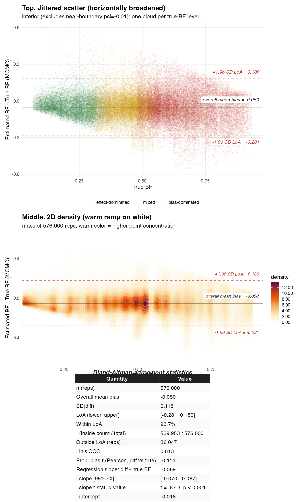
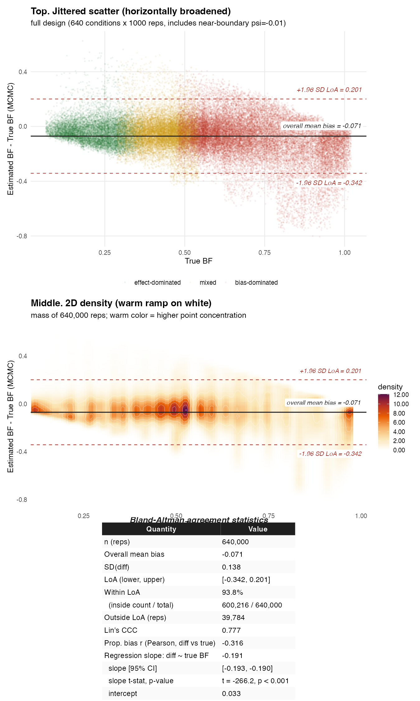
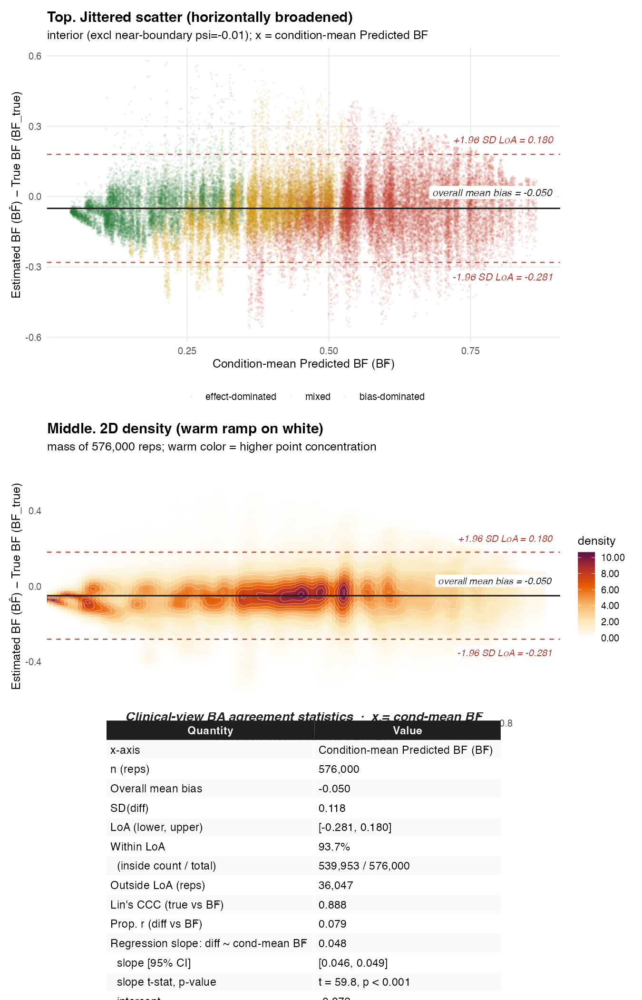
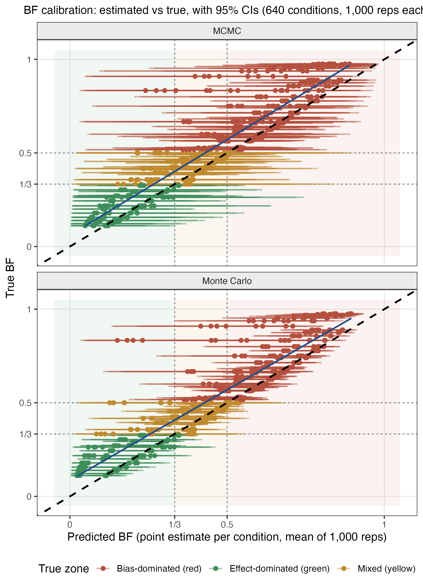
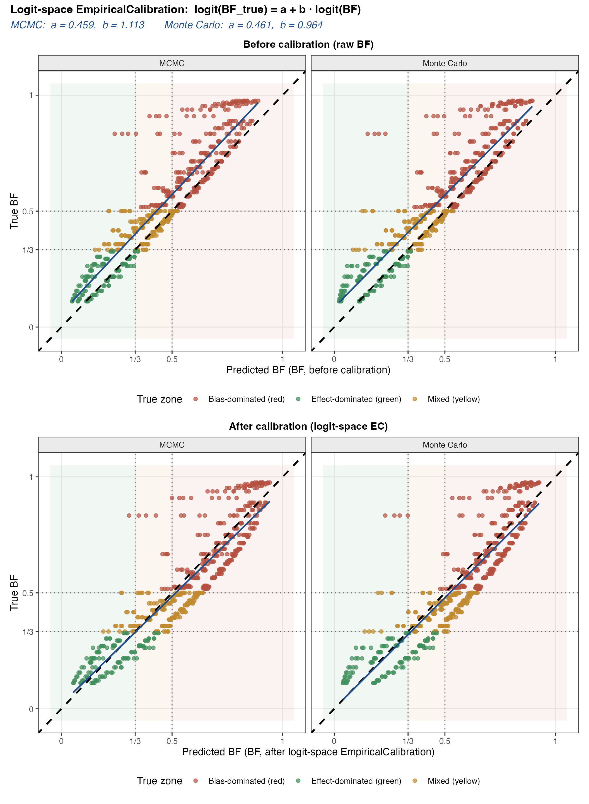
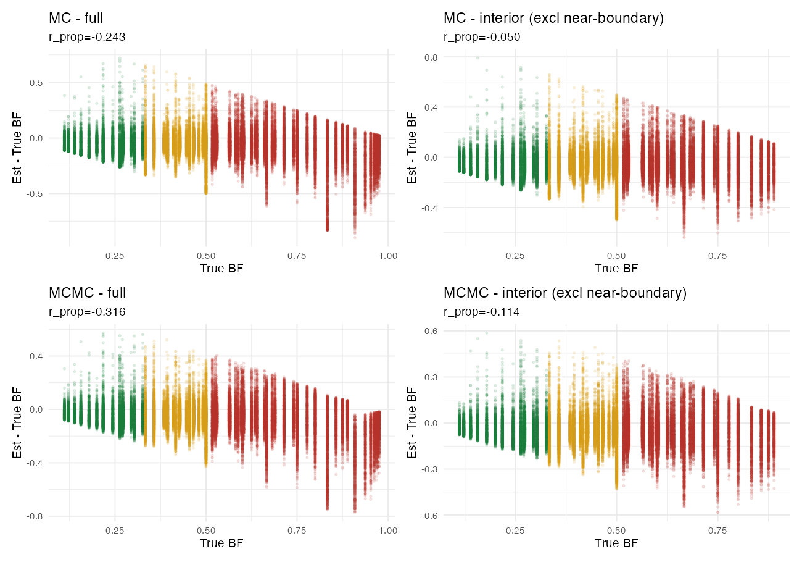

真实世界证据（real-world evidence, RWE）越来越多地进入指南与监管决策。研究者用目标试验模拟（target trial emulation, TTE）、TMLE 等方法，尽可能模仿随机试验。但这些方法共同依赖一个关键假设：无未测量混杂假设（no unmeasured confounding），即"所有影响治疗与结局的共同原因都已被测量并调整"。 Real-world evidence (RWE) increasingly informs guidelines and regulatory decisions. Researchers use target trial emulation (TTE), TMLE, and related methods to mimic randomized trials as closely as possible. But all of these methods share one critical assumption: no unmeasured confounding, that "every common cause of treatment and outcome has been measured and adjusted for."
健康依从者效应（healthy adherer effect）：依从治疗的患者，即使吃的是安慰剂，结局也更好，因为他们本身更健康、更自律、医疗资源更好。观察性研究中，"依从性好，按要求服药"这件事本身就携带了大量与药物无关的预后信息。 The healthy adherer effect: patients who adhere to therapy have better outcomes even on placebo, because they are healthier, more disciplined, and have better access to care to begin with. In observational studies, "taking the full dose" itself carries a wealth of prognostic information that has nothing to do with the drug.
在讲局限之前，先用临床的语言把这套已有的校准方法（OHDSI 经验校准框架，Schuemie et al. 2014/2018，实现于 EmpiricalCalibration R 包）拆成三步。它建立在三个依次递进的概念上：负对照 → 系统偏倚的分布（μ̂B, σ̂B）→ 校准 p 值。本论文的 BF 与 BER 正是踩在这些肩膀上，详见后文动画 D。 Before its limitation, let's unpack this pre-existing calibration method (the OHDSI empirical-calibration framework, Schuemie et al. 2014/2018, in the EmpiricalCalibration R package) in clinical language, in three steps. It rests on three sequential concepts: negative control → the distribution of systematic bias (μ̂B, σ̂B) → calibrated p-value. BF and BER stand on these shoulders, see Animation D below.
负对照是一个治疗"不可能"影响的结局，但它和主结局共享同一套混杂结构（同一批未测量的因素 U 同时污染它和主结局）。因为真实效应已知为零，所以一旦观察到"治疗与负对照相关"，这段相关只能来自偏倚，绝不可能来自药物作用，这相当于一块"已知真值为 0 的校准砝码"：我们确切知道治疗对它没有真实作用，于是测量出的任何非零关联，都是天平（研究设计）的系统误差读数。 A negative control is an outcome the treatment cannot possibly affect, yet it shares the primary outcome's confounding structure (the same unmeasured factors U corrupt both). Because its true effect is known to be zero, any observed treatment–control association must come from bias, never from the drug, it is a "calibration weight known to be exactly 0": we know the treatment has no real effect on it, so any non-zero measured association is the scale's (the study design's) systematic-error reading.
🩺 举例：β 受体阻滞剂不可能预防白内障（cataract），但如果观察数据里"达标组"的白内障发生率也更低（比如：3.2% vs 4.2%，RR≈0.76）。β 受体阻滞剂理论上没法保护眼睛，所以这 0.76 的"保护作用"只能来自健康依从者效应这类混杂，它正是我们要校准的偏倚的直接证据。像这样的负对照我们可以寻找很多个，比如：β 受体阻滞剂 与 痢疾、β 受体阻滞剂 与 骨折等等。 🩺 Example: a beta-blocker cannot prevent cataract, yet in observational data the "target-dose" group also shows lower cataract rates (for example, 3.2% vs 4.2%, RR≈0.76). The drug cannot plausibly protect the eyes, so this 0.76 "protective effect" can only come from confounding such as the healthy-adherer effect, which is direct evidence of the very bias we must calibrate. We can find many such negative controls, for example beta-blocker versus dysentery or beta-blocker versus fracture.
把 K 个负对照各自的估计值交给软件包，它会用最大似然拟合成一个钟形分布（经验零分布）。这个钟形有两个参数：
• 中心 μ̂B（平均系统偏倚）：系统误差（未观测到的偏倚）平均把治疗（处理/暴露/干预）效果的估计值往哪边、推了多少，这相当于那把一台秤的零点重新设置在"平均偏低 0.3 kg"的地方。
• 宽度 σ̂B（偏倚异质性）：不同负对照之间偏倚的离散程度，相当于未放置任何物品的秤每日归零复测，示数在 −0.2 到 −0.4 间漂移的范围。
在本文后面展示的 β 受体阻滞剂研究里，研究者选择了12 个负对照，它们全部偏向保护一侧，拟合出 μ̂B = −0.190（ln(RR) 尺度，即系统误差（未观测到的偏倚）平均把β 受体阻滞剂的治疗效果的估计值往"保护"方向推了 0.190），σ̂B = 0.068（各对照间偏倚的波动不大、彼此相当一致）。
Feed the K control estimates to the package and it fits them, by maximum likelihood, into a bell-shaped distribution (the empirical null). It has two parameters:
• Center μ̂B (mean systematic bias): on average, which way and how far the design pushes estimates, like the scale's constant offset of "running ~0.3 kg low."
• Width σ̂B (bias heterogeneity): how much the bias scatters across different controls, like a scale with nothing on it, re-zeroed and tested each day, its display drifting between −0.2 and −0.4.
In our beta-blocker study, all 12 controls leaned protective, fitting μ̂B = −0.190 (log-RR scale, i.e. the design on average pushes estimates 0.190 toward "protection") and σ̂B = 0.068 (the bias is modest and fairly consistent across controls).
校准 p 值检验的是"以第二步中产生的，K个负对照拟合的偏倚分布（以 μ̂B 为中心、并纳入 σ̂B 不确定性的钟形）为参照，治疗效果的估计值是否显著不等于 0？" The calibrated p-value asks: "using as the reference the bias distribution fitted in Step 2 from the K negative controls (a bell centered at μ̂B, incorporating the uncertainty σ̂B), is the estimate of the treatment effect significantly different from 0?"
解释：以β 受体阻滞剂研究为例，初步分析得到主结局 ln(RR) = −0.184（即未校准 RR≈0.83）：若按"无偏倚"的尺子，它显著不等于 0；但放进以 −0.190 为中心（-0.190 相当于修正过的 零点）的偏倚钟形里，它恰好落在正中央，说明这段"差异"和未测量偏倚造成的偏差几乎一模一样。于是校准 p 值 = 0.94，结论是：扣除偏差后，没有证据显示真实效应存在。 Worked example: in the beta-blocker study, the primary analysis returned ln(RR) = −0.184 (uncalibrated RR≈0.83). Against the "no-bias" yardstick it is significantly different from 0; but placed in the bias bell centered at −0.190 it lands dead center, meaning the observed "difference" is almost exactly what unmeasured bias alone would produce. The calibrated p-value is therefore 0.94: after removing the bias, there is no evidence of a real effect.
ψ̃ = ψ̂obs − μ̂B 校准后（去偏倚）效应 = 观测估计 − 估计的系统偏倚（均在 ln(RR) 尺度）Calibrated (de-biased) effect = observed estimate − estimated systematic bias (both on the log-RR scale)
负对照告诉我们研究设计平均会把估计向保护方向偏移多少（μ̂B）；校准就是从观测值中减去这个系统偏移，并把偏倚的不确定性（σ̂B）并入标准误： Negative controls tell us how far the design shifts estimates in the protective direction on average (μ̂B); calibration subtracts this systematic shift from the observed value and folds the bias uncertainty (σ̂B) into the standard error:
σ̃ = √σ̂obs² + σ̂B² 校准后标准误 = 抽样误差与系统误差不确定性的合成（根号下是两者的平方和）Calibrated SE = combination of sampling and systematic uncertainty (the square root of their sum of squares)
这一节专门为临床读者准备：用四组动画把"负对照是什么、软件包算什么、经验零分布是什么、BF/BER 怎么算出来"讲透。每组动画都可以自动播放，也可以一步步手动看。 This section is written for clinical readers: four animations cover "what a negative control is, what the software package computes, what the empirical null distribution is, and how BF/BER are calculated." Each animation can auto-play or be stepped through manually.
# ① EmpiricalCalibration 包：用 12 个负对照估计"系统偏倚分布" | Fit the systematic-bias distribution from 12 negative controls
null_fit <- EmpiricalCalibration::fitNull(nc_log_rr, nc_se_log_rr)
mu_b <- null_fit[1] # 平均系统偏倚 μ̂_B = -0.190（ln(RR) 尺度） | mean systematic bias
sigma_b <- null_fit[2] # 对照间偏倚的异质性 σ̂_B = 0.068 | between-control heterogeneity
# ② 校准主估计：从观测估计中减去系统偏倚 | Calibrate: subtract systematic bias from the observed estimate
log_rr_cal <- log_rr_uncal - mu_b # ψ̃ = -0.184 - (-0.190) = +0.0063 → RR 1.006
cal_p <- EmpiricalCalibration::calibrateP(null_fit, log_rr_uncal, se_log_rr)
# 校准 p = 0.943：扣除偏倚后与零无区别 | indistinguishable from null
# ③ BF 与 BER（本论文提出的两个新指标，不在 EmpiricalCalibration 包内；实现于 biasratio 包 v0.2.0）
# BF and BER (new metrics introduced by this paper, NOT part of EmpiricalCalibration; implemented in biasratio v0.2.0)
bf <- abs(mu_b) / (abs(mu_b) + abs(log_rr_cal)) # = 0.906（bootstrap 中位数 | bootstrap median）
ber <- abs(mu_b) / abs(log_rr_cal) # = 30.4（原始比值；中位数 9.6 | raw ratio; median 9.6）
# ④ 置信区间：只重抽样 12 个负对照 × 2000 次，logit（BF）/ log（BER）尺度取分位数
# CI: resample only the 12 negative controls × 2000; percentiles on the logit (BF) / log (BER) scale
# → BF 95% CI [0.74, 0.99]，整个区间 > 0.5 → 偏倚主导区 | entire interval > 0.5 → bias-dominated
每个指标给出三件套：严谨定义 → 数学符号 → 通俗解释（含比喻）。所有指标都只需负对照估计与主估计两个输入，无需额外数据。 Each metric comes as a triple: formal definition → mathematical notation → plain-language explanation (with an analogy). All metrics need only two inputs, the negative-control estimates and the primary estimate, and no additional data.
拖动滑块，改变"估计出的系统偏倚"与"校准后残留效应"，实时观察 BF、BER 与三区落点。也可以点击预设场景。 Drag the sliders to change the "estimated systematic bias" and the "calibrated residual effect", and watch BF, BER, and the three-zone placement update in real time. You can also click a preset scenario.
先厘清两个关键概念。
① "达到 ≥50% 目标剂量 β 受体阻滞剂" 与 "<50%" 分别指什么？ 心衰指南要求 β 阻滞剂从极小剂量起步、逐步向上滴定到"目标剂量"（例如比索洛尔 10 mg/天、卡维地洛 25 mg 每日两次、琥珀酸美托洛尔 200 mg/天）。本研究不比较"有没有开这个药"，而是比较"出院时实际被滴定到了多少"达到至少一半目标剂量的患者，与低于一半（<50%）的患者，并假设他们在出院后一年内维持出院时的用量。比较他们 1 年后的心血管事件发生率。这正是最容易混进健康依从者效应的地方：能顺利爬到目标剂量的，往往是更耐受、更自律、被更积极随访管理的人，他们本来预后就更好。
② "GDMT 治疗"是什么？为什么只算 3 个药、不是临床医生印象里的 4 个？ GDMT（guideline-directed medical therapy，指南导向的药物治疗）是心衰（射血分数下降型，HFrEF）的标准治疗。临床医生如今熟悉的"四根支柱"是：肾素-血管紧张素系统阻断剂（ACEI/ARB/ARNI）+ β 阻滞剂 + 盐皮质激素受体拮抗剂（MRA，如螺内酯）+ SGLT2 抑制剂（如达格列净）。但本研究只取前 3 类（ACEI/ARB/ARNI + β 阻滞剂 + MRA），不把 SGLT2 抑制剂算进去。原因是 SGLT2 抑制剂用于心衰是 2020–2021 年才写进指南的（达格列净的 EMPEROR-Reduced、恩格列净的 EMPULSE 研究），而 MIMIC-IV 这批患者的住院时间大多在这之前，队列里几乎没人用过 SGLT2 抑制剂。如果硬要"集齐 4 个药才算 GDMT"，我们的阳性对照人群会几乎为空、毫无区分度。所以本研究把 GDMT 锚定在当时真正的标准治疗上：3 类药物。这样 GDMT 才是一个"确实被广泛使用、且真实效应很大"的阳性对照，用来检验校准方法会不会矫枉过正（把真效应也一起扣掉）。
Two key concepts to clarify first.
① What do "achieving ≥50% of the target beta-blocker dose" and "<50%" mean? Heart-failure guidelines start beta-blockers at a minimal dose and titrate up step by step to a "target dose" (e.g., bisoprolol 10 mg/day, carvedilol 25 mg twice daily, metoprolol succinate 200 mg/day). This study does not compare "was the drug prescribed," but "how far was it actually titrated after discharge", patients who reached at least half the target dose versus those below half (<50%), assuming they maintained their discharge dosage over the year after discharge. We compare their 1-year cardiovascular event rate. This is exactly where the healthy-adherer effect sneaks in: those who successfully climb to target dose are the more tolerant, more adherent, more actively managed patients, who already had a better prognosis.
② What is "GDMT therapy," and why only 3 drugs instead of the 4 clinicians expect? GDMT (guideline-directed medical therapy) is the standard treatment for heart failure with reduced ejection fraction (HFrEF). The "four pillars" clinicians now know are: renin-angiotensin system blocker (ACEI/ARB/ARNI) + beta-blocker + mineralocorticoid receptor antagonist (MRA, e.g., spironolactone) + SGLT2 inhibitor (e.g., dapagliflozin). But this study takes only the first three classes (ACEI/ARB/ARNI + beta-blocker + MRA), excluding the SGLT2 inhibitor. The reason: SGLT2 inhibitors entered heart-failure guidelines only in 2020–2021 (dapagliflozin's EMPEROR-Reduced, empagliflozin's EMPULSE trials), whereas most MIMIC-IV hospitalizations predate that window, almost no patient in the cohort was on an SGLT2 inhibitor. Insisting on "all 4 drugs = GDMT" would leave our positive-control group nearly empty and uninformative. So the study anchors GDMT to what was genuinely standard of care then: three drug classes. That makes GDMT a positive control that was "actually widely used and has a large true effect," used to test whether calibration over-corrects (removing the true effect along with the bias).
| 要素 | 目标剂量 β 受体阻滞剂案例 | GDMT 治疗案例 |
|---|---|---|
| P 人群 Population |
心衰（射血分数下降型，HFrEF）住院、β 阻滞剂新用药者、出院存活且可随访 ≥1 年；共 14,677 例心衰住院 | 同一队列、同一合格标准（GDMT 阳性对照与 β 阻滞剂案例共享同一批患者） |
| I 干预/暴露 Intervention |
出院时达到 ≥50% β 阻滞剂目标剂量（并假定出院后 1 年内维持该用量） | 出院时使用 ≥3 类 GDMT（ACEI/ARB/ARNI + β 阻滞剂 + MRA） |
| C 对照 Comparator |
出院时 <50% 目标剂量 | 出院时未达 GDMT（<3 类） |
| O 结局 Outcome |
出院后 1 年心血管事件发生率（本研究核心硬终点为全因死亡（对临床结局最干净、最少争议的测量） | |
| S 研究设定 Setting |
MIMIC-IV 重症/住院电子病历队列；采用观察性目标试验模拟（TTE）设计与报告 | |
| T 时间 Time |
time-zero = 出院日；假定出院后 1 年内维持出院时用量；随访至出院后 1 年 | |
| Element | Target-dose beta-blocker case | GDMT therapy case |
|---|---|---|
| P Population | HFrEF hospitalization, new users of beta-blocker, discharged alive and followable ≥1 year; 14,677 HF hospitalizations | Same cohort, same eligibility (GDMT positive control shares the same patients as the beta-blocker case) |
| I Intervention | Achieved ≥50% of target beta-blocker dose at discharge (assumed maintained over the year after discharge) | On ≥3 GDMT classes at discharge (ACEI/ARB/ARNI + beta-blocker + MRA) |
| C Comparator | <50% of target dose at discharge | Not on GDMT (<3 classes) at discharge |
| O Outcome | 1-year cardiovascular event rate (the paper's core hard endpoint is all-cause mortality, the cleanest, least-debatable clinical measurement) | |
| S Setting | MIMIC-IV critical-care / inpatient EHR cohort; designed and reported as an observational target trial emulation (TTE) | |
| T Time | time-zero = day of discharge; dosage assumed maintained for 1 year; follow-up to 1 year post-discharge | |
β 受体阻滞剂是射血分数降低型心衰治疗的基石：随机试验（MERIT-HF、CIBIS-II、COPERNICUS）证明目标剂量能降低死亡。但真实世界里，能达到目标剂量的患者不到一半。于是每个心内科医生都见过这样的数据："剂量达标的患者，死亡率更低"：观察性研究一再重复这个保护性关联，临床上的直接推论就是"应该更积极地向上滴定"。可问题在于：这是药的作用，还是人的作用？能被滴定到目标剂量的患者，本来就是血流动力学更稳、肾功能更好、依从性更高的患者（第①节的"健康依从者效应"）。这个问题无法用随机试验回答：伦理上不允许把患者随机分配到"不滴定"组，所以只能靠观察性数据，而观察性数据又天然被这个问题困扰。它是"表面关联与真实效应难以区分"的最典型场景，也是示范一个偏倚诊断指标的最佳考题。 Beta-blockers are a cornerstone of therapy for heart failure with reduced ejection fraction: randomized trials (MERIT-HF, CIBIS-II, COPERNICUS) proved that target doses reduce mortality. Yet in the real world, fewer than half of patients ever reach the target dose. So every cardiologist has seen the same data, "patients who reach the target dose have lower mortality": observational studies reproduce this protective association again and again, and the clinical implication seems to be "titrate more aggressively." The problem: is it the drug, or the patient? Patients who can be titrated to target are, to begin with, the hemodynamically stabler, renal-function-better, more adherent patients (the healthy adherer effect of Section ①). A randomized trial cannot answer this, one cannot ethically randomize patients to "no titration", so only observational data can speak, and observational data are exactly where this problem lives. It is the canonical case of "observed association vs. real effect," and therefore the ideal exam question for demonstrating a bias diagnostic.
一个"看起来很简单"的两组比较（剂量达标 vs 未达标），背后是一连串刻意的设计决定。理解它们各自在防什么，才能理解为什么这项研究敢自称"严谨"，也才能理解后面"即便如此仍有偏倚"的结论有多大的冲击力。 A seemingly simple two-group comparison (target dose achieved vs. not) rests on a chain of deliberate design decisions. Understanding what each one guards against is a precondition for understanding why this study can claim rigor, and why the later finding that bias persisted anyway is so striking.
| 设计决定Design decision | 具体做法What was done | 防什么偏倚 / 满足什么条件What bias it guards against / what it buys |
|---|---|---|
| 新用药设计（new-user）New-user design | 只纳入入院时未在使用 β 受体阻滞剂的患者Only patients not already on a beta-blocker at admission | 慢性用药者已经"活过了"最初的风险期，直接混入会把生存者效应算成药物效应Chronic users already survived their early risk period; including them credits survivorship to the drug |
| 治疗策略 = 住院期间达到 ≥50% 目标剂量Strategy = achieving ≥50% target dose during index hospitalization | ≥50% vs <50%，对应指南滴定目标≥50% vs <50%, mirroring the guideline titration goal | 住院期是滴定决策集中发生的窗口，也是临床医生最能干预的窗口The index hospitalization is when titration decisions concentrate, and where clinicians can act |
| 7 天宽限期7-day grace period | 随访从第 8 天起算Follow-up starts on day 8 | 防不朽时间偏倚：从入院起算，"还在等待滴定"的患者会拥有一段不可能死亡的时间，人为夸大达标组的获益Prevents immortal time bias: counting from admission hands the on-target arm a period in which dying was impossible, inflating its apparent benefit |
| 结局 = 1 年全因死亡（含出院后）Outcome = 1-year all-cause mortality (incl. post-discharge) | 第 8–365 天死亡，源自死亡日期记录Deaths on days 8–365, from date-of-death records | 硬终点、随访完整、避免软结局归因的主观性Hard endpoint with complete follow-up; avoids the subjectivity of soft outcome adjudication |
| 10 个基线协变量10 baseline covariates | 年龄、性别、心率、QRS、QTc、房颤、LBBB、肌酐、eGFR、血钾Age, sex, heart rate, QRS, QTc, AF, LBBB, creatinine, eGFR, potassium | 把能测量的混杂尽量调干净，这样剩下的偏倚只能来自测不到的东西，负对照才有用武之地Adjust away everything measurable, so any residual bias can only come from the unmeasured, which is exactly where negative controls earn their keep |
| TMLE + SuperLearnerTMLE + SuperLearner | 双重稳健估计器，当前因果推断的前沿方法Doubly robust estimator, the current frontier of causal inference | 用"最好的分析"排除"分析不够好"这个借口，让偏倚诊断的结论无从推诿Uses the best available analysis so that "the analysis wasn't good enough" is off the table, the bias verdict cannot be deflected |
| 12 个负对照，跨 7 个临床域12 negative controls across 7 clinical domains |
12 个负对照（中文 / English）：
1. 感染复合（infection） 4705 事 2. 消化道出血（gi_bleed, GI bleeding） 1535 3. 跌倒（fall） 83 4. 尿路感染（uti_only, UTI） 3620 5. 蜂窝织炎（cellulitis） 1339 6. 白内障（cataract） 317 7. 骨关节炎（osteoarthritis） 1502 8. 交通事故（traffic_accident） 77 9. 痔（hemorrhoids） 674 10. 良性前列腺增生（bph, BPH） 938 11. 痛风（gout） 1847 12. 肌腱炎（tendinitis） 58 每例 ≥50 事件，全部留一法稳健。 All 12 controls (Chinese / English): 1. 感染复合 (infection composite) 4705 events 2. 消化道出血 (gi_bleed, GI bleeding) 1535 3. 跌倒 (fall) 83 4. 尿路感染 (uti_only, UTI) 3620 5. 蜂窝织炎 (cellulitis) 1339 6. 白内障 (cataract) 317 7. 骨关节炎 (osteoarthritis) 1502 8. 交通事故 (traffic_accident) 77 9. 痔 (hemorrhoids) 674 10. 良性前列腺增生 (bph, BPH) 938 11. 痛风 (gout) 1847 12. 肌腱炎 (tendinitis) 58 each ≥50 events; leave-one-out robust. | 7 个临床域覆盖：感染（Infectious）、胃肠道（Gastrointestinal）、外伤（Trauma）、皮肤（Dermatologic）、眼科（Ophthalmologic）、骨骼肌肉（Rheumatologic / musculoskeletal）、泌尿生殖（Genitourinary）。药理上不可能被 β 受体阻滞剂预防/导致的结局，它们身上的关联就是偏倚的"活检标本"（详见下方明细表）。7 clinical domains covered: Infectious, Gastrointestinal, Trauma, Dermatologic, Ophthalmologic, Rheumatologic / musculoskeletal, Genitourinary. Outcomes that beta-blockade cannot plausibly prevent or cause; any association they show is a "biopsy specimen" of the bias (full detail below). |
| # | 中文名Chinese name | English (正式 / short name) | 临床域Clinical domain | 临床域（英）Domain (EN) | ln(RR) ± SE | RR [95% CI] | 事件数Events |
|---|---|---|---|---|---|---|---|
| 感染 Infectious · 2 项Infectious · 2 controls | |||||||
| 1 | 感染复合 | infection (composite) | 感染 | Infectious | −0.217 ± 0.025 | 0.81 [0.77, 0.85] | 4,705 |
| 4 | 尿路感染 | uti_only (UTI) | 感染 | Infectious | −0.200 ± 0.030 | 0.82 [0.77, 0.87] | 3,620 |
| 胃肠道 Gastrointestinal · 2 项Gastrointestinal · 2 controls | |||||||
| 2 | 消化道出血 | gi_bleed (GI bleeding) | 胃肠道 | Gastrointestinal | −0.199 ± 0.051 | 0.82 [0.74, 0.91] | 1,535 |
| 9 | 痔 | hemorrhoids | 胃肠道 | Gastrointestinal | −0.353 ± 0.082 | 0.70 [0.60, 0.83] | 674 |
| 外伤 Trauma · 2 项Trauma · 2 controls | |||||||
| 3 | 跌倒 | fall | 外伤 | Trauma | −0.408 ± 0.246 | 0.66 [0.41, 1.08] | 83 |
| 8 | 交通事故 | traffic_accident | 外伤 | Trauma | −0.154 ± 0.246 | 0.85 [0.53, 1.39] | 77 |
| 皮肤 Dermatologic · 1 项Dermatologic · 1 control | |||||||
| 5 | 蜂窝织炎 | cellulitis | 皮肤 | Dermatologic | −0.233 ± 0.055 | 0.79 [0.71, 0.88] | 1,339 |
| 眼科 Ophthalmologic · 1 项Ophthalmologic · 1 control | |||||||
| 6 | 白内障 | cataract | 眼科 | Ophthalmologic | −0.277 ± 0.120 | 0.76 [0.60, 0.96] | 317 |
| 骨骼肌肉 Rheumatologic / musculoskeletal · 3 项Rheumatologic / musculoskeletal · 3 controls | |||||||
| 7 | 骨关节炎 | osteoarthritis | 骨骼肌肉 | Rheumatologic | −0.190 ± 0.052 | 0.83 [0.75, 0.92] | 1,502 |
| 11 | 痛风 | gout | 骨骼肌肉 | Rheumatologic | −0.002 ± 0.044 | 1.00 [0.91, 1.09] | 1,847 |
| 12 | 肌腱炎 | tendinitis | 骨骼肌肉 | Rheumatologic | −0.531 ± 0.302 | 0.59 [0.33, 1.06] | 58 |
| 泌尿生殖 Genitourinary · 1 项Genitourinary · 1 control | |||||||
| 10 | 良性前列腺增生 | bph (benign prostatic hyperplasia) | 泌尿生殖 | Genitourinary | −0.103 ± 0.065 | 0.90 [0.79, 1.02] | 938 |
| 合计 12 个负对照 / 7 个临床域，全部 ln(RR) 估计由同一 TMLE + SuperLearner 管线产出；每一项 RR < 1（即 ln(RR) < 0），共同驱动经验零分布 μ̂B = −0.190、σ̂B = 0.068。 Total: 12 controls / 7 domains, all ln(RR) estimates produced by the same TMLE + SuperLearner pipeline; every RR < 1 (i.e. ln(RR) < 0), jointly driving the empirical null at μ̂B = −0.190, σ̂B = 0.068. | |||||||
下表依据 TARGET 指南（Transparent Reporting of Observational Studies Emulating a Target Trial；Cashin et al., JAMA 2025）的完整报告清单（21 个条目），把本研究的变量逐一列出。第 6 项"目标试验规范"展开为 8 个核心组件（6a–6h：纳入排除、治疗策略、分配程序、随访、结局、因果对比、识别假设、数据分析），确保不遗漏任何一项。左列为理想目标试验中该条目的含义（规范），右列为本研究在观察性数据中的具体实现（β 阻滞剂与 GDMT 两项研究均覆盖，共享处标注"两项共用"）。第 8 项"受试者选择"以入组流程图展示（见下表下方）。 Based on the full TARGET reporting checklist (21 items) (Transparent Reporting of Observational Studies Emulating a Target Trial; Cashin et al., JAMA 2025), the table below lists every study variable. Item 6 "Target trial specification" is expanded into the 8 core components (6a–6h: eligibility, treatment strategies, assignment, follow-up, outcome, causal contrast, identifying assumptions, data analysis), so no item is omitted. The left column states what the item means in the ideal target trial (specification); the right column states how the study implements it in observational data (both the beta-blocker and GDMT studies are covered; shared items are marked "both studies"). Item 8 "Participant selection" is shown as a flow diagram below the table.
| TARGET 条目 Item (# / section) | 目标试验规范 Specification | 本研究观察性模拟实现 Observational emulation |
|---|---|---|
| 摘要 AbstractAbstract | ||
| 1 摘要 Abstract · 1a–1c |
声明研究以观察数据模拟目标试验；列出数据源；总结假设、方法、发现与结论。State the study emulates a target trial with observational data; list data sources; summarize assumptions, methods, findings and conclusions. | 声明本研究以 MIMIC-IV 观察数据模拟目标试验，比较 β 阻滞剂达标剂量与 GDMT 多药对 1 年心血管事件的影响；列出数据源（MIMIC-IV，14,677 例）；总结方法（TMLE + SuperLearner + 负对照校准）与发现（未校准 RR 0.83 / 0.65，校准后 1.01 / 0.78）及结论（BF 量化偏倚主导）。States the study emulates a target trial with MIMIC-IV data comparing achieved beta-blocker dose and multi-drug GDMT on 1-year cardiovascular events; lists sources (MIMIC-IV, 14,677); summarizes methods (TMLE + SuperLearner + negative-control calibration) and findings (uncalibrated RR 0.83 / 0.65, calibrated 1.01 / 0.78) and conclusion (BF quantifies bias dominance). |
| 引言 IntroductionIntroduction | ||
| 2 背景 Background |
描述研究的科学背景与知识缺口。Describe the scientific background and the knowledge gap. | β 阻滞剂与 GDMT 是 HFrEF 治疗的基石，但观察性研究中健康依从者效应会系统性高估其疗效；经验性偏倚诊断（BF/BER）填补方法学空白。两项研究共用同一背景。Beta-blockers and GDMT are HFrEF cornerstones, yet in observational data the healthy-adherer effect systematically overstates benefit; the empirical bias diagnostic (BF/BER) fills a methodology gap. Both studies share this background. |
| 3 因果问题 Causal question |
概括因果问题。Summarize the causal question. | 在 HFrEF 住院新用药者中，达到 ≥50% 目标剂量 β 阻滞剂（或同时使用 ≥3 类 GDMT）是否降低 1 年心血管事件发生率？两项研究共用同一因果问题框架。Among new users hospitalized for HFrEF, does achieving ≥50% target beta-blocker dose (or being on ≥3 GDMT classes) reduce 1-year cardiovascular events? Both studies share the same causal-question framework. |
| 4 理由 Rationale |
说明为何用可用数据模拟目标试验，并引用相关 RCT。Explain why emulating a target trial with the available data, citing informing RCTs. | 以目标试验模拟把观察性分析表达为随机试验，便于与 CHAMP-HF 等 RCT 直接对话；并用负对照经验校准诊断未测量混杂造成的系统性偏倚。两项研究共用同一理由。Target trial emulation frames the observational analysis as a randomized trial, enabling direct dialogue with RCTs such as CHAMP-HF; negative-control calibration diagnoses systematic bias from unmeasured confounding. Both studies share this rationale. |
| 方法 MethodsMethods | ||
| 5 数据源 Data sources |
列出每个数据源并描述其原始用途、类型、地理场景与时段；如相关说明数据如何链接或合并。Cite each data source and describe its original purpose, type, setting, period; if relevant, how data were linked or pooled. | MIMIC-IV（2008–2022，ICU 与住院数据）链接 MIMIC-IV-ECG；描述原始用途、类型、美国教学医院场景与时段；单中心去标识化数据库。两项研究共用同一数据源。MIMIC-IV (2008–2022, ICU and inpatient) linked to MIMIC-IV-ECG; describes original purpose, type, US teaching-hospital setting and period; de-identified single-center database. Both studies share the same source. |
| 6 目标试验规范 Target trial specification |
明确能回答因果问题的目标试验协议各组件（以下 6a–6h 逐条展开）。Specify the components of the target trial protocol that would answer the causal question (expanded item by item as 6a–6h below). | 协议组件在观察数据中均可被锚定与操作化（见 6a–6h 与第 7 项）。All protocol components are anchorable and operationalizable in the data (see 6a–6h and item 7). |
| 6a 纳入与排除标准 Eligibility criteria |
描述理想目标试验中两策略可被随机分配的合格标准。Describe eligibility under which both strategies are randomly assignable in the ideal trial. | β 阻滞剂：HFrEF 住院、β 阻滞剂新用药者（time-zero 前 90 天无该药，消除既往用药者偏倚与不朽时间偏倚）、出院存活且可随访 ≥1 年；共 14,677 例。GDMT：共享同一合格标准与同一批 14,677 例，按药物类别数分类。Beta-blocker: HFrEF hospitalization, new users (no prior use 90 days before time-zero, removing prevalent-user and immortal-time bias), discharged alive and followable ≥1 year; 14,677 cases. GDMT: same eligibility and same 14,677 patients, classified by drug-class count. |
| 6b 治疗策略 Treatment strategies |
描述两预先定义的静态策略。Describe the two pre-specified static strategies. | β 阻滞剂：干预 = 出院时达到 ≥50% 目标日剂量（假定维持 1 年），对照 = <50%。GDMT：干预 = 出院时使用 ≥3 类（ACEI/ARB/ARNI + β 阻滞剂 + MRA），对照 = <3 类；不含 SGLT2i（当时未纳入指南）。均在 time-zero 一次性定义，不随时点改变。Beta-blocker: intervention = ≥50% target dose achieved at discharge (assumed maintained 1 year), comparator = <50%. GDMT: intervention = ≥3 classes at discharge (ACEI/ARB/ARNI + beta-blocker + MRA), comparator = <3; SGLT2i excluded (not guideline-standard then). Defined once at time-zero, not time-varying. |
| 6c 分配程序与时点 Assignment procedure & timing |
在 time-zero（基线）进行随机分配。Random assignment at time-zero (baseline). | 两项研究均以出院日为 time-zero；在 time-zero 测量达到剂量 / 达类数作为观测暴露。新用药者设计保证 time-zero 前无暴露，故无入组前用药造成的不朽时间偏倚；分配虽非随机，但锚定在明确定义时点。Both studies use discharge day as time-zero; achieved dose / class count is measured as the observed exposure at time-zero. New-user design ensures no pre-time-zero exposure, so no immortal-time bias; assignment is observational but anchored to a well-defined time zero. |
| 6d 随访期 Follow-up period |
随访自分配起至预设终点（1 年）或结局发生。Follow-up from assignment to the pre-specified end (1 year) or event. | 两项研究随访均自出院日（time-zero）起至出院后 1 年；设 3–14 天宽限期处理出院带药与剂量爬坡时滞。结局在统一时点测量，避免错判随访起点。Both studies: follow-up from discharge (time-zero) to 1 year post-discharge; a 3–14 day grace period handles discharge stockpiling and titration lag. Outcome measured at a fixed time point. |
| 6e 结局 Outcome(s) |
描述预先指定的硬终点，盲法判定以减少错分。Describe pre-specified hard endpoints, adjudicated to reduce misclassification. | 两项研究主要结局均为出院后 1 年心血管事件；核心硬终点为全因死亡（测量最干净）。MIMIC-IV 死亡记录延伸至出院后，使 1 年全因死亡随访完整。Both studies: primary outcome is 1-year cardiovascular events; core hard endpoint is all-cause mortality (cleanest). MIMIC-IV death records extend beyond discharge, giving complete 1-year mortality follow-up. |
| 6f 因果对比 Causal contrast(s) |
描述感兴趣的因果对比，含效应量。Describe the causal contrasts of interest, including effect measures. | 两项研究的主要因果对比均为达到目标剂量 / 药物类别数（PP 式暴露）与 1 年结局之间的关联，估计的因果量为 平均处理效应 ATE = ln(RR)（即达到与未达到目标剂量人群的 1 年死亡对数风险比）。这正是健康依从者效应最易混入之处：暴露本身由患者依从性驱动，而依从性又关联未测量的健康状态。为控制事后挑选偏倚，ITT（按 time-zero 初始分配）与 PP（按实际达到剂量）两种对比均预先声明；GDMT 另作为阳性对照检验校准是否矫枉过正。Both studies' primary causal contrast is the association between achieved target dose / drug-class count (PP-style exposure) and the 1-year outcome, estimating the average treatment effect ATE = ln(RR) (log risk ratio for 1-year death comparing achieved vs not-achieved target dose). This is exactly where the healthy-adherer effect enters: exposure is driven by adherence, which itself links to unmeasured health. To avoid post-hoc selection, both ITT (initial assignment at time-zero) and PP (actual achieved dose) contrasts are pre-specified. GDMT also serves as a positive control against over-correction. |
| 6g 识别假设 Identifying assumptions |
描述为识别每个因果估计量所需假设（含因无随机化产生的基线混杂假设）及与之相关的变量。Describe assumptions needed to identify each estimand (including baseline confounding due to no randomization) and related variables. | 可识别假设：① 无未测量混杂（纳入 10 个基线可测协变量）；② Positivity（两策略在协变量下均有正概率）；③ 一致性（策略定义对应潜在结局）。负对照直接检验可测混杂方向；不可测混杂由 BF 量化。两项研究假设相同。Identification assumptions: (i) no unmeasured confounding (10 measured baseline covariates); (ii) positivity (both strategies have positive probability given covariates); (iii) consistency. Negative controls directly test the direction of measured confounding; unmeasured confounding is quantified by BF. Assumptions identical for both studies. |
| 6h 数据分析 Data analysis |
描述每个估计量的分析流程、建模假设与缺失数据处理。Describe the analysis procedure, modelling assumptions and missing-data handling for each estimand. | 两项研究均采用 TMLE（双重稳健、半参数有效）估计，nuisance 由 SuperLearner 集成（glm/gam/xgboost）拟合，纳入 10 个基线协变量；叠加 12 负对照经验校准与 BF/BER 诊断。理由见下方专节。Both studies use TMLE (doubly robust, semiparametrically efficient) with nuisances fit by SuperLearner (glm/gam/xgboost) over 10 baseline covariates; layered with 12 negative-control empirical calibration and BF/BER diagnostics. Rationale below. |
| 7 目标试验模拟（操作化） Target trial emulation |
描述各组件如何在观察数据中操作化，含所有变量的测量 / 确定方式。Describe how each component is operationalized in data, including how all variables were measured or ascertained. | 所有变量在数据中可操作化：剂量由出院处方计算，结局由 MIMIC-IV 死亡 / 再入院记录，协变量取 time-zero 前测量值；避免错判随访起点与暴露。两项研究共享同一操作化框架。All variables operationalized in data: dose from discharge prescriptions, outcomes from MIMIC-IV death/readmission records, covariates measured before time-zero; avoids misclassifying follow-up start and exposure. Both studies share the operationalization framework. |
| 结果 ResultsResults | ||
| 8 受试者选择 Participant selection |
报告评估合格、合格、分配至各策略的人数；强烈建议附流程图。Report numbers assessed, eligible, and assigned to each strategy; a flow diagram is strongly recommended. | 见下方入组流程图：15,053 例心衰住院评估 → 376 例排除（宽限期内未存活至 time-zero）→ 14,677 例合格 → 1,772 例（≥50%）/ 12,905 例（<50%）。GDMT 共享同一合格队列，按药物类别数分类。See the participant flow diagram below: 15,053 HF hospitalizations assessed → 376 excluded (did not survive to time-zero) → 14,677 eligible → 1,772 (≥50%) / 12,905 (<50%). GDMT shares the same eligible cohort, classified by drug-class count. |
| 9 基线数据 Baseline data |
描述各策略基线特征分布。Describe baseline characteristic distributions by strategy. | 表 2 报告各策略基线分布：10 个协变量的标准化均值差（SMD）；中位年龄 73 岁（IQR 63–82），45.7% 女性；达标组呈健康依从者表型。两项研究共用同一基线表（同一队列）。Table 2 reports baseline distributions by strategy: standardized mean differences (SMD) for 10 covariates; median age 73 (IQR 63–82), 45.7% female; the achieved-dose group shows the healthy-adherer phenotype. Both studies share the same baseline table (one cohort). |
| 10 随访 Follow-up |
总结随访时长，描述各策略与对比的随访终止原因。Summarize follow-up length; describe reasons for end of follow-up per strategy and contrast. | 两项研究随访均至 1 年；报告各策略随访终止原因（死亡、失访、竞争事件）。详见入组流程图随访框。Both studies followed to 1 year; reports reasons for end of follow-up per strategy (death, loss to follow-up, competing events). See the follow-up boxes in the flow diagram. |
| 11 缺失数据 Missing data |
描述各变量缺失频率（按策略）。Describe missing-data frequency per variable (by strategy). | MIMIC-IV 死亡随访完整，主要结局缺失极低；协变量缺失按 TMLE 的 SuperLearner 处理。两项研究相同。MIMIC-IV mortality follow-up is complete, so primary-outcome missingness is minimal; covariate missingness handled by TMLE's SuperLearner. Same for both studies. |
| 12 结局 Outcomes |
描述各策略结局的频率或分布。Describe outcome frequency or distribution by strategy. | β 阻滞剂：未校准 RR 0.83 → 校准 1.01（p=0.94）；GDMT：0.65 → 0.78（p=0.007）。校准后保护性关联在 β 阻滞剂中消失、在 GDMT 中存留。Beta-blocker: uncalibrated RR 0.83 → calibrated 1.01 (p=0.94); GDMT: 0.65 → 0.78 (p=0.007). The protective association vanishes for beta-blocker but survives for GDMT after calibration. |
| 13 效应估计 Effect estimates |
报告各因果对比的效应估计与精度（相对与绝对指标）。Report effect estimates with precision for each contrast (relative and absolute). | 报告 RR（相对）与 RD（绝对），均含 95% CI；并附 Fieller 置信集以诚实处理比值在分母趋零时的无界区间。两项研究同法。Reports RR (relative) and RD (absolute), both with 95% CI; a Fieller confidence set honestly handles unbounded intervals when the ratio denominator approaches zero. Same method for both studies. |
| 14 附加分析 Additional analyses |
报告评估估计对操作化、假设与分析选择敏感性的所有分析。Report all analyses assessing sensitivity to choices in operationalization, assumptions and analysis. | 敏感性：三套 SuperLearner 库（glm / +gam / +xgboost）结论稳健；留一法（LOO）负对照；Bootstrap；GDMT 阳性对照检验过度校正。两项研究共享同一敏感性框架（见第⑥节）。Sensitivity: three SuperLearner libraries (glm / +gam / +xgboost) give stable conclusions; leave-one-out (LOO) negative controls; bootstrap; GDMT positive control to detect over-correction. Both studies share the sensitivity framework (Section ⑥). |
| 讨论 DiscussionDiscussion | ||
| 15 解释 Interpretation |
对关键发现给出解释。Provide an interpretation of the key findings. | 校准后 β 阻滞剂效应 ≈0（偏倚主导），GDMT 真实获益存留；BF 提供偏倚主导程度的量化。结合阴性对照指纹解读。两项研究共同构成解释。After calibration the beta-blocker effect ≈0 (bias-dominated) while GDMT's genuine benefit survives; BF quantifies the degree of bias dominance. Read with the negative-control fingerprint. Both studies form the interpretation. |
| 16 局限 Limitations |
讨论局限，考虑目标试验与其模拟的差异及假设合理性（含基线混杂）。Discuss limitations, considering gaps between target trial and emulation and plausibility of assumptions (incl. baseline confounding). | 负对照只检验可测混杂方向，未测量混杂仍需 BF 量化；静态策略为近似；MIMIC-IV 单中心选择偏倚；目标试验与模拟之间的差异。两项研究共论。Negative controls test only the direction of measured confounding; unmeasured confounding still needs BF; static strategy is an approximation; MIMIC-IV single-center selection; gaps between target trial and emulation. Discussed for both studies. |
| 其他信息 Other informationOther information | ||
| 17 伦理 Ethics |
提供伦理委员会审批与编号（如相关）。Provide IRB / ethics approval and number, if relevant. | MIMIC-IV 经批准的数据使用协议（PhysioNet 认证）；研究使用去标识化公开数据库，豁免个体知情同意。两项研究共用（见论文 Other Information）。MIMIC-IV approved data-use agreement (PhysioNet credentialing); study uses de-identified public data with waiver of consent. Both studies share this (paper's Other Information). |
| 18 注册 Registration |
说明研究方案是否、何时、在何处注册。State whether, when and where the protocol was registered. | 研究方案预注册状态与注册号见论文 Other Information（遵循 RECORD-PE 报告规范）。两项研究共用。Protocol pre-registration status and number in the paper's Other Information (RECORD-PE guideline). Both studies share this. |
| 19 材料共享 Sharing |
说明数据、代码与材料是否可及、何处可及。State whether data, code and materials are accessible, and where. | 数据 MIMIC-IV（需 PhysioNet 认证）；全部 R 代码、分析与 12 个负对照公开于 GitHub / Zenodo（DOI 见论文）。两项研究共用。Data MIMIC-IV (PhysioNet credentialing); all R code, analyses and 12 negative controls public on GitHub / Zenodo (DOI in paper). Both studies share this. |
| 20 资金来源 Funding |
提供资金来源及资助方在研究中的角色。Provide funding sources and the funders' role. | 资金来源与资助方在设计、实施、报告中的角色见论文 Other Information。两项研究共用。Funding sources and funders' role in design, conduct and reporting per paper's Other Information. Both studies share this. |
| 21 利益冲突 Conflicts of interest |
声明全体作者的利益冲突与财务披露。State all authors' conflicts of interest and financial disclosures. | 全体作者的利益冲突与财务披露见论文 Other Information。两项研究共用。All authors' conflicts of interest and financial disclosures per paper's Other Information. Both studies share this. |
本研究在分析层采用 TMLE（targeted maximum likelihood estimation，靶向最大似然估计）配合 SuperLearner 集成学习。这不是随意选择，而是为了让"规范设计（TARGET）"与"前沿估计"各司其职、互相补位。 At the analysis layer the study uses TMLE (targeted maximum likelihood estimation) with a SuperLearner ensemble. This is not arbitrary: it lets rigorous design (TARGET) and frontier estimation play complementary roles.
① TMLE 的双重稳健性（doubly robust）。TMLE 同时拟合倾向模型与结果模型，并把两者结合起来。它的关键性质是：只要两者之一设定正确，因果估计就一致。相比之下，传统回归调整要求结果模型完全正确、IPTW（逆概率加权）要求倾向模型完全正确，任一误设即偏。TMLE 还是半参数有效的，在同类估计器中方差最小。因此即便真实关系复杂，TMLE 也不像单一模型那样脆弱。 ① TMLE is doubly robust. TMLE fits both a propensity model and an outcome model and combines them. The key property: the causal estimate is consistent if either one is correctly specified. By contrast, plain regression requires the outcome model to be exactly right, and IPTW requires the propensity model to be exactly right; misspecify either and it biases. TMLE is also semiparametrically efficient, attaining the smallest variance among its class. So it is far less fragile than a single model.
② SuperLearner 是 TMLE 的"配置"层（nuisance 引擎）。TMLE 的质量取决于那两个 nuisance 函数的拟合。SuperLearner 不赌单一参数形式，而是用交叉验证从一组候选算法（glm、gam、xgboost 等）中按样本外风险选出最优加权集成。即使真实关系高度非线性，集成也能自适应捕捉；渐近上它不劣于（且通常优于）任一单个候选。本研究测试了三套库（SL.glm / +SL.gam / +SL.xgboost），结论稳健（见第⑥节敏感性检验）。 ② SuperLearner is TMLE's configuration layer (nuisance engine). TMLE's quality hinges on those two nuisance functions. SuperLearner does not bet on one parametric form; via cross-validation it selects the optimal weighted ensemble from candidate algorithms (glm, gam, xgboost, etc.) by out-of-sample risk. Even if the true relation is highly nonlinear, the ensemble adapts; asymptotically it is no worse (usually better) than any single candidate. We tested three libraries (SL.glm / +SL.gam / +SL.xgboost); conclusions were stable (Section ⑥ sensitivity checks).
③ 与当代其他因果推断方法比较的先进性。下表把本研究配置（TMLE + SuperLearner）与几种常用方法在四个维度上直接对比： ③ Its advancement over other contemporary causal methods. The table contrasts our configuration (TMLE + SuperLearner) with common alternatives on four dimensions:
| 方法 | 双重稳健 | 半参数有效 | 对模型误设稳健 | 极端权重敏感度 |
|---|---|---|---|---|
| 朴素结果回归 Naive outcome regression | 否 | 否 | 脆弱（结果模型误设即偏） | 不涉及权重 |
| IPTW 逆概率加权 Inverse probability weighting | 否（需倾向模型正确） | 否 | 脆弱（倾向误设即偏） | 高（极端权重易爆炸） |
| G-computation 标准化 G-computation / standardization | 否（需结果模型正确） | 否 | 脆弱（结果模型误设即偏） | 不涉及权重 |
| TMLE（本研究） Targeted ML estimation | 是 | 是 | 稳健（倾向或结果其一正确即一致） | 低（截断 + 集成） |
| DoubleML Double machine learning | 是 | 是 | 稳健 | 低 |
| SuperLearner （非独立估计器） | 不是独立的因果估计器，而是 TMLE 的 nuisance 函数拟合引擎，提供模型灵活性与抗误设保护 | |||
| Method | Doubly robust | Semipar. efficient | Robust to misspecification | Extreme-weight sensitivity |
|---|---|---|---|---|
| Naive outcome regression | No | No | Fragile (biases if outcome model wrong) | No weights |
| Inverse probability weighting (IPTW) | No (needs correct propensity) | No | Fragile (biases if propensity wrong) | High (extreme weights blow up) |
| G-computation / standardization | No (needs correct outcome model) | No | Fragile (biases if outcome model wrong) | No weights |
| TMLE (this study) | Yes | Yes | Robust (consistent if either model correct) | Low (truncation + ensemble) |
| DoubleML | Yes | Yes | Robust | Low |
| SuperLearner | Not a standalone causal estimator; it is TMLE's nuisance-engine, supplying model flexibility and misspecification protection | |||
④ 其他优势。
• 第一，TMLE 与负对照经验校准天然兼容：分析层（TMLE 估计）之上可叠加诊断层（BF/BER），二者不冲突。
• 第二，对极端倾向得分权重不敏感（经截断与集成，避免 IPTW 的权重爆炸）。
• 第三，透明可复现：TRIPOD 风格报告，全部 R 代码、数据与 12 个负对照公开，任何人可重跑。
正因如此，当校准诊断显示"即便有双重稳健 + 前沿估计，估计仍被系统性偏移主导"时，这个判决不可能被归咎于分析粗糙，而只能指向未测量混杂，这正是经验性偏倚诊断不可替代的理由。
④ Other advantages.
• First, TMLE is naturally compatible with negative-control calibration: the diagnostic layer (BF/BER) stacks on top of the analysis layer (TMLE estimate) without conflict.
• Second, it is insensitive to extreme propensity weights (via truncation and ensembling, avoiding IPTW's weight blow-up).
• Third, it is transparent and reproducible: TRIPOD-style reporting, with all R code, data, and the 12 negative controls public so anyone can rerun.
Precisely because of this, when the calibration diagnostic shows that "even under doubly robust, frontier estimation the estimate remains bias-dominated," the verdict cannot be blamed on sloppy analysis, but only on unmeasured confounding, which is exactly why an empirical bias diagnostic is irreplaceable.
下面给出 TMLE 在本研究 RR 尺度上的关键公式。符号约定：$O = (W, A, Y)$，$W$ 是协变量向量，$A \in \{0,1\}$ 是治疗，$Y \in \{0,1\}$ 是结局；$g(A, W) = \Pr(A \mid W)$ 是倾向模型，$\bar Q(A, W) = \mathrm{E}(Y \mid A, W)$ 是结果模型，$\bar Q_0(W) = \mathrm{E}(Y \mid A=0, W)$、$\bar Q_1(W) = \mathrm{E}(Y \mid A=1, W)$。 Below are the core TMLE equations on the RR scale used in this study. Notation. $O = (W, A, Y)$ where $W$ is the covariate vector, $A \in \{0,1\}$ is treatment, $Y \in \{0,1\}$ is outcome; $g(A, W) = \Pr(A \mid W)$ is the propensity model, $\bar Q(A, W) = \mathrm{E}(Y \mid A, W)$ is the outcome model, $\bar Q_0(W) = \mathrm{E}(Y \mid A=0, W)$, $\bar Q_1(W) = \mathrm{E}(Y \mid A=1, W)$.
① 初始估计（nuisance 拟合，SuperLearner 完成）① Initial estimation (nuisance fits, done by SuperLearner)
$\hat g(A, W) = \mathrm{SuperLearner}\bigl[\Pr(A \mid W);\ \text{glm, gam, xgboost}\bigr]$
$\hat{\bar Q}_0(W) = \mathrm{SuperLearner}\bigl[\mathrm{E}(Y \mid A=0, W)\bigr]$, $\hat{\bar Q}_1(W) = \mathrm{SuperLearner}\bigl[\mathrm{E}(Y \mid A=1, W)\bigr]$
$\hat g(A, W) = \mathrm{SuperLearner}\bigl[\Pr(A \mid W);\ \text{glm, gam, xgboost}\bigr]$
$\hat{\bar Q}_0(W) = \mathrm{SuperLearner}\bigl[\mathrm{E}(Y \mid A=0, W)\bigr]$, $\hat{\bar Q}_1(W) = \mathrm{SuperLearner}\bigl[\mathrm{E}(Y \mid A=1, W)\bigr]$
② 智能缺失函数（clever covariate / fluctuation variable）② Clever covariate (fluctuation variable)
$H_a(W) = \dfrac{I(A=a)}{\hat g(A=a, W)} - \dfrac{I(A=1-a)}{\hat g(A=1-a, W)}$, $a \in \{0, 1\}$
③ 靶向更新（targeting step）：以 $H_a(W)$ 为偏移参数，对初始 $\hat{\bar Q}_a^*$ 做 logistic 波动拟合，解出 $\hat\epsilon$。 ③ Targeting step. Use $H_a(W)$ as the offset parameter and fit a logistic fluctuation of the initial $\hat{\bar Q}_a^*$ to solve for $\hat\epsilon$.
$\mathrm{logit}\,\hat{\bar Q}_a^{\star}(W) = \mathrm{logit}\,\hat{\bar Q}_a(W) + \hat\epsilon \cdot H_a(W)$
最小化 $\sum_i \bigl[Y_i - \hat{\bar Q}_{A_i}^{\star}(W_i)\bigr]^2$，唯一参数 $\hat\epsilon$。
Minimise $\sum_i \bigl[Y_i - \hat{\bar Q}_{A_i}^{\star}(W_i)\bigr]^2$ over the single parameter $\hat\epsilon$.
④ 因果对比度估计（本研究：$\ln\mathrm{RR}$ 尺度）④ Causal contrast estimate (this study: $\ln\mathrm{RR}$ scale)
$\widehat{\ln\mathrm{RR}}_{\mathrm{TMLE}} = \dfrac{1}{n} \sum_{i=1}^{n}\Bigl[\mathrm{logit}\,\hat{\bar Q}_1^{\star}(W_i) - \mathrm{logit}\,\hat{\bar Q}_0^{\star}(W_i)\Bigr]$ $\widehat{\ln\mathrm{RR}}_{\mathrm{TMLE}} = \dfrac{1}{n} \sum_{i=1}^{n}\Bigl[\mathrm{logit}\,\hat{\bar Q}_1^{\star}(W_i) - \mathrm{logit}\,\hat{\bar Q}_0^{\star}(W_i)\Bigr]$
⑤ 高效影响函数（EIF，给出 95% CI 与标准误）⑤ Efficient influence function (yields the 95% CI and standard error)
$\mathcal{D}(O) = H_1(W)\bigl\{Y - \hat{\bar Q}_1^{\star}(W)\bigr\} - H_0(W)\bigl\{Y - \hat{\bar Q}_0^{\star}(W)\bigr\} + \mathrm{logit}\,\hat{\bar Q}_1^{\star}(W) - \mathrm{logit}\,\hat{\bar Q}_0^{\star}(W) - \psi$
其中 $\psi = \widehat{\ln\mathrm{RR}}_{\mathrm{TMLE}}$；$\mathrm{Var}(\widehat{\ln\mathrm{RR}}) \approx \mathrm{Var}\bigl[\mathcal{D}(O)\bigr]/n$，由此得 $\mathrm{SE}$ 与 95% CI。
where $\psi = \widehat{\ln\mathrm{RR}}_{\mathrm{TMLE}}$; $\mathrm{Var}(\widehat{\ln\mathrm{RR}}) \approx \mathrm{Var}\bigl[\mathcal{D}(O)\bigr]/n$, from which the $\mathrm{SE}$ and 95% CI follow.
⑥ 双重稳健性公式（关键性质）⑥ Doubly-robust formula (the key property)
$\widehat{\psi}_{\mathrm{DR}}^{\mathrm{AIPW}}(O) = \underbrace{\bigl[\hat{\bar Q}_1(W) - \hat{\bar Q}_0(W)\bigr]}_{\text{结果模型贡献}} + \underbrace{\dfrac{A}{\hat g(1,W)}\bigl\{Y - \hat{\bar Q}_1(W)\bigr\} - \dfrac{1-A}{\hat g(0,W)}\bigl\{Y - \hat{\bar Q}_0(W)\bigr\}}_{\text{倾向模型加权残差}}$
⇒ 若 $\hat{\bar Q}$ 或 $\hat g$ 其中之一设定正确（其余可有任意有限维误设），$\widehat{\psi}_{\mathrm{DR}}^{\mathrm{AIPW}} \xrightarrow{p} \psi$。
$\widehat{\psi}_{\mathrm{DR}}^{\mathrm{AIPW}}(O) = \underbrace{\bigl[\hat{\bar Q}_1(W) - \hat{\bar Q}_0(W)\bigr]}_{\text{outcome-model contribution}} + \underbrace{\dfrac{A}{\hat g(1,W)}\bigl\{Y - \hat{\bar Q}_1(W)\bigr\} - \dfrac{1-A}{\hat g(0,W)}\bigl\{Y - \hat{\bar Q}_0(W)\bigr\}}_{\text{propensity-weighted residuals}}$
⇒ If either $\hat{\bar Q}$ or $\hat g$ is correctly specified (the other may be arbitrarily misspecified within a finite-dimensional class), $\widehat{\psi}_{\mathrm{DR}}^{\mathrm{AIPW}} \xrightarrow{p} \psi$.
上式即增强反概率加权估计量（AIPW / 双机器学习 DML 估计量），是 TMLE 的渐近等价表达。它把"结果模型的预测"与"倾向加权残差"加在一起，两者各自独立吸收一个 nuisance 模型的偏倚——只要其中一个 nuisance 模型正确，整个估计量就一致，这就是所谓"双重稳健（doubly robust）"的精确含义。TMLE 再通过靶向步骤把估计量"投影"到使 EIF 期望为 0 的位置，从而同时获得半参数有效方差下界（van der Laan & Rose, 2011; van der Laan & Rubin, 2006）。 The above is the augmented inverse-probability-weighted (AIPW / double-machine-learning) estimator, the asymptotic equivalent of TMLE. It adds the outcome-model prediction to propensity-weighted residuals, with each nuisance model independently absorbing bias from the other — consistency follows as long as either nuisance is correctly specified, which is the precise meaning of doubly robust. The targeting step then projects the estimator onto the sub-model where the EIF has mean zero, simultaneously attaining the semiparametric efficiency bound (van der Laan & Rose, 2011; van der Laan & Rubin, 2006).
⑦ TMLE 的"双稳健"与"半参数有效"两个性质互不蕴含，但 TMLE 同时拥有。双重稳健只保证一致性（即渐近无偏）；半参数效率保证方差达到 Cramer–Rao 下界（即同任务中最小的渐近方差）。朴素回归与 IPTW 既不双稳健也不半参数有效；AIPW 估计量双稳健但需手动求解；TMLE 把两者打包成"自动 = 双稳健 + 半参数有效"。这就是本研究把它定为分析层主方法的原因。 ⑦ "Doubly robust" and "semiparametrically efficient" are independent properties; TMLE has both. Doubly robust only guarantees consistency (asymptotic unbiasedness); semiparametric efficiency guarantees the Cramer–Rao lower bound (smallest possible asymptotic variance). Naive regression and IPTW have neither; the AIPW estimator is doubly robust but requires a manual solve; TMLE packages "doubly robust + semiparametric efficient" in one automatic procedure — the reason we chose it as the analysis-layer method.
| 扰动方式Perturbation | 结果Result | 分区结论变化？Zone verdict changed? |
|---|---|---|
| 留一法（逐一剔除 12 个负对照后重新校准）Leave-one-out (re-calibrate after dropping each of the 12 controls) | BF 范围 0.89–0.99BF range 0.89–0.99 | ❌ 无变化（全部留在红区）No change (all remain red) |
| SuperLearner 三配置（SL.glm / +SL.gam / +SL.xgboost）Three SuperLearner libraries (SL.glm / +SL.gam / +SL.xgboost) | BF = 0.90 / 0.90 / 0.92（CI 下界 0.72–0.75）BF = 0.90 / 0.90 / 0.92 (CI lower bounds 0.72–0.75) | ❌ 无变化（注意：底层 BER 波动 20 倍，BF 只动了 0.02，有界尺度的优势）No change (note: the underlying BER moved 20-fold while BF moved only 0.02, the bounded scale's advantage) |
| 宽限期 3–14 天Grace period 3–14 days | 校准 RR 0.995–1.049；BF 0.80–0.98Calibrated RR 0.995–1.049; BF 0.80–0.98 | ❌ 无变化No change |
| 负对照正态性诊断Negative-control normality diagnostics | Shapiro-Wilk p = 0.168；最大标准化残差 2.32（痛风）Shapiro-Wilk p = 0.168; max standardized residual 2.32 (gout) | ❌ 无变化No change |
上一节的案例研究有一个无法回避的盲点：在真实数据上，没有人知道正确答案。MIMIC-IV 里 β 受体阻滞剂的真实效应到底是多少？不知道，所以当 BF 判定"偏倚主导"时，严格说我们无法对答案。一个新指标要让人敢用，必须先在已知答案的场合验证过。 The case study above has an unavoidable blind spot: on real data, nobody knows the right answer. What is the true beta-blocker effect in MIMIC-IV? Unknown, so when BF rules "bias-dominated," there is strictly no answer key to check against. Before a new metric can be trusted, it must first be validated where the answer is known.
这在检验医学里是常识：一个新试剂用于临床之前，必须先用已知浓度的标准品做分析性能验证（灵敏度、特异性、抗干扰），然后才允许检测未知样品。模拟研究就是 BF 的分析性能验证。做法：数据由我们自己生成，所以真实效应（ψ）和真实偏倚（μB）由我们自己设定，标准答案掌握在出题人手里；然后让 BF 走完它在真实数据上要走的全部流程（拟合经验零 → 算 BF → 三区分类），对照标准答案打分。 This is common sense in laboratory medicine: before a new assay enters clinical use, it must first be validated against reference samples of known concentration, sensitivity, specificity, interference, and only then applied to unknown specimens. The simulation is exactly that analytical validation for BF. The data are generated by us, so the true effect (ψ) and the true bias (μB) are set by us, the answer key is in the examiner's hands. BF is then run through the identical pipeline it faces on real data (fit the empirical null → compute BF → three-zone classification) and graded against the key.
设计：析因模拟，五个因子：真实效应 ψ（10 档，v37.1 设计：{−0.01, −0.05, −0.10, −0.14, −0.18, −0.23, −0.27, −0.31, −0.36, −0.40}，最小档 ψ=−0.01 取代早期 ψ=0（BF=1）奇点，移除有界指标结构性 ceiling）、系统偏倚 μB（8 档）、偏倚异质性 σB（2 档）、负对照数 K（12/25）、偏倚交换性违反比例（0%/30%）。每次重复都拟合经验零、算 BF、做三区分类，并与 OHDSI 校准 p 值及"不校准"两种策略对照。 Design: a factorial simulation with five factors: true effect ψ (10 levels; v37.1 design: {−0.01, −0.05, −0.10, −0.14, −0.18, −0.23, −0.27, −0.31, −0.36, −0.40}, the smallest level ψ=−0.01 replaces the earlier ψ=0 (BF=1) singularity, removing the bounded-index structural ceiling), systematic bias μB (8 levels), bias heterogeneity σB (2 levels), number of negative controls K (12/25), and exchangeability violation (0%/30%). Each replication fits the empirical null, computes BF, performs three-zone classification, and is compared against OHDSI calibrated p-values and the "no calibration" strategy.
五个因子不是随意拼凑的：BF 的公式是 |μB| / (|μB| + |ψ|)，它的分子是偏倚、分母里有效应、而估计精度取决于负对照的数量与一致性，五个因子恰好逐一对应这些成分，再加上一个专门打破方法自身假设的压力测试。 The five factors are not assembled at random: BF's formula is |μB| / (|μB| + |ψ|), its numerator is bias, the effect sits in the denominator, and its estimation precision depends on the number and consistency of the negative controls. The five factors map one-to-one onto these ingredients, plus a stress test that deliberately breaks the method's own assumption.
| 因子Factor | 档位Levels | 它在校什么What it probes |
|---|---|---|
| 真实效应 ψTrue effect ψ | −0.01 至 ln(RR) = −0.40，共 10 档−0.01 to ln(RR) = −0.40, 10 levels (v37: −0.01 replaces the former 0) | 覆盖"近似无效（RR=0.99）"到"强获益（RR=0.67）"的全谱，考指标能否把各种强度的真效应分到正确的区。v37 设计变更：原来的 ψ=0 是 BF=1 比值指标的奇点（分子=|μB|、分母=|μB|+|ψ|，当 |ψ|=0 时该量为 1，是个结构性 ceiling），人为留出样本会让 BA 图右端出现"瀑布形下沉"。改为 ψ=−0.01 后该格 BFtrue∈{0.952,0.976,0.985}，全在红区，三区分类完整保留。Spans "near-null (RR=0.99)" to "strong benefit (RR=0.67)", can the metric sort effects of every strength into the right zone? v37 design change: the previous ψ=0 cell was a ratio-metric singularity (BF = |μB|/(|\mu_B|+|\psi|) = 1 when |\psi|=0, a structural ceiling that produced a visible downward "waterfall" at the right edge of the BA plot). Replacing it with ψ=−0.01 moves that cell to BFtrue∈{0.952, 0.976, 0.985}, all inside the red zone, and the three-zone classification is preserved. |
| 系统偏倚 μBSystematic bias μB | −0.05 至 −0.40，共 8 档−0.05 to −0.40, 8 levels | BF 的分子。偏倚多强时指标还判得准？考"检出下限"BF's numerator. Up to what bias magnitude does the metric still classify correctly?, the detection limit |
| 偏倚异质性 σBBias heterogeneity σB | 0.05 / 0.100.05 / 0.10 | 各负对照的偏倚是否彼此一致？考经验零拟合的前提：对照之间偏倚"齐不齐"Is the bias consistent across controls?, probes the fitting assumption that controls share one bias distribution |
| 负对照数 KNumber of controls K | 12 / 2512 / 25 | 要多少个对照才够？12 = 本案例研究的规模，25 = 更大规模研究，直接回答"我自己的研究用几个对照行不行"How many controls suffice? 12 = the case study's scale, 25 = a larger study, directly answers "is my study's K enough?" |
| 交换性违反Exchangeability violation | 0% / 30% 对照的偏倚被平移 +0.150% / 30% of controls' bias shifted by +0.15 | 唯一故意打破方法自身核心假设的因子。若三成"对照"其实并非零效应（选错了对照），方法还能撑住吗？就像安全带认证必须做碰撞测试：好的方法要在假设被打破时优雅降级（偏向保守），而不是给出貌似自信的错误答案The one factor that deliberately breaks the method's own core assumption, if 30% of the "controls" are not truly null (bad control choices), does the method still hold? Like crash-testing a seatbelt: a good method should degrade gracefully (toward caution) when its assumption is violated, not deliver confidently wrong answers |
BF 本身是一个连续量（落在 0 与 1 之间）。本节把 BF 当成连续估计器，用 Bland-Altman（BA）一致性分析回答一个更细腻的问题："BF 点估计相对真值的偏离，是不是均匀地分布在真值尺度上？还是说 BF 越大，估计越不准？" 我们跑满 640 个条件 × 1000 次重复 = 640,000 次，对每一个重复计算 MCMC 估计的 BF 与真值之差（diff = BF̂ − BFtrue），以真实 BF 为横轴画 BA 图。 BF is a continuous quantity living in [0,1]. Here we treat BF as a continuous estimator and use a Bland-Altman (BA) agreement study to answer a finer question: does the deviation of the BF point estimate from truth spread uniformly across the truth scale, or does BF get less accurate as it grows? We ran the full 640 conditions × 1000 replications = 640,000 replications, and for each computed the MCMC BF estimate minus the true BF (diff = BF̂ − BFtrue), plotting diff against the true BF.
两张图结构相同：顶部是打散的散点云（按三区着色，绿=效应主导、黄=混合、红=偏倚主导），中间是白底暖色 2D 密度（颜色越暖 = 点越密），底部是完整的 agreement 参数表。v37 设计已把 ψ=0 这一格换成 ψ=−0.01（RR=0.99），因此 BF=1 边界不在 operating range 内；图 L 是 interior 版——剔除 ψ=0 后 v37 历史参考的 576,000 次（v37 重跑后该边界消失，576,000→640,000 主分析全谱）；图 M 是 full 版——v37 历史 640,000 次，含 ψ=−0.01 的天花板效应区域。当前（图 L）已是 v37 主分析的代表；图 M 仅供 reader 比较 v37 ceiling-effect 伪影，不进入 numerical headline。 Both share one layout: a top jittered scatter cloud (colored by zone: green = effect-dominated, yellow = mixed, red = bias-dominated), a middle warm-ramp 2D density on white (warmer = denser), and a full agreement parameter table at the bottom. The v37 redesign replaces the ψ=0 cell with ψ=−0.01 (RR=0.99), so the BF=1 boundary is no longer inside the operating range; Fig L is the interior version — 576,000 v37 historical reps with ψ=0 (BF=1) excluded (after the v37 rerun the boundary disappears and primary analysis runs over the full 640,000 reps); Fig M is the full version — all 640,000 v37 reps including the BF=1 ceiling-effect region. Fig L is the headline figure for the v37 primary analysis. Fig M is shown as a historical reference for the v37 ceiling artifact and does not enter the numerical headline.


上面 L/M 两版把"BF̂ − BF_true"画成 BF_true 的函数——这是统计学家视角（评估估计器整体性能）。但临床研究者拿到的是 一个具体 BF̂ 值（模型算出来的），更想知道"这一档 BF̂ 的误差大约多少"。图 N 把 X 轴换成 BF̂ 的 10 个分档，Y 轴仍是误差，每 panel 一个 (ψ, μ_B) 条件，箱线展示分档误差分布、蓝色菱形是中位数、红色须是 95% LoA。读法：横向看同一行 6 个 panel 对比不同 μ_B 的影响；纵向看同一列 7 个 panel 对比不同 ψ。规律：BF̂ 越接近 BF_true，误差越小；ψ = −0.01（最上一行）误差最大且最分散，与前面 L/M 的"近边界 ceiling"结论一致。 Figs L/M plot "BF̂ − BF_true" against BF_true — the statistician's view (estimator-level assessment). Clinicians, however, receive a single predicted BF̂ and want to know "what's the error range for this BF̂ bin?" Fig N swaps the X axis to 10 BF̂ bins while keeping error on the Y axis; one panel per (ψ, μ_B) condition. Boxes show the per-bin error distribution, blue diamonds mark the median, red whiskers show 95% LoA. Reading: rows compare μ_B at fixed ψ (top row ψ = −0.01 is the boundary condition with the largest dispersion, consistent with the ceiling effect in Figs L/M); columns compare ψ at fixed μ_B.

两版 BA 图都显示：经验 LoA（bias ± 1.96·SD）覆盖了约 94% 的重复，Lin's 一致性相关系数（CCC）在 interior 为 0.81、full 为 0.78，说明 BF 作为连续估计器总体上与真值高度一致。但回归 diff ~ 真实 BF 的斜率显著为负：interior 为 −0.069、full 为 −0.191（两者 p 均 < 0.001）。这说明估计误差随真实 BF 增大而系统性变负——也即 BF 越高，估计值越偏向低估。 Both BA versions show that the empirical LoA (bias ± 1.96·SD) covers about 94% of replications, and Lin's concordance correlation (CCC) is 0.81 for interior and 0.78 for full — BF as a continuous estimator is highly consistent with truth overall. But the regression slope of diff on true BF is significantly negative: −0.069 for interior and −0.191 for full (both p < 0.001). The estimation error becomes systematically more negative as the true BF grows — i.e., the higher the BF, the more the estimate under-states it.
| 统计量Statistic | interior（576k，剔除 ψ=−0.01）interior (576k, drops BF=1) | full（640k，含 ψ=−0.01）full (640k, includes BF=1) |
|---|---|---|
| 总体均值偏倚Overall mean bias | −0.050 | −0.071 |
| SD(diff) | 0.118 | 0.138 |
| LoA [下, 上]LoA [lower, upper] | [−0.281, 0.180] | [−0.342, 0.201] |
| LoA 内占比Within LoA | 93.7% | 93.8% |
| LoA 外（次数）Outside LoA (reps) | 36,288 | 39,680 |
| Lin's CCC | 0.813 | 0.777 |
| 比例偏倚 r（diff vs 真值）Prop. bias r (diff vs true) | −0.114 | −0.316 |
| 回归斜率 [95% CI]Reg slope [95% CI] | −0.069 [−0.070, −0.067] | −0.191 [−0.193, −0.189] |
| 斜率 t, pSlope t, p | −87.3, p < 0.001 | −266.2, p < 0.001 |
| 截距Intercept | −0.016 | +0.033 |
| 截距 t, pIntercept t, p | −38.4, p ≈ 4.7e-154 | 78.1, p < 0.001 |
把每个 条件级点估计（该条件 1,000 次 BF̂ 估计的均值）对真值画散点（图 H），回归斜率 MCMC 1.015 / Monte Carlo 0.949，斜率本身接近 1，但 intercept 显著为正（MCMC 0.083、Monte Carlo 0.115），点云整体落在对角线上方（True > Estimated）—— 即 BF̂ 在高值段被系统性低估，与 BA 一致性研究的比例偏倚同根同源。但点云整体沿对角线分布，说明 BF 作为连续量仍是有用的相对排序指标。补充说明：横坐标「Predicted BF」= 1 个条件下 1,000 次 BF̂ 估计的均值（点估计，不是一次实验的 BF̂ 值）；也就是说，每个点对应 640 个 (ψ, μ_B, σ_ps, K, exV) 组合中的一个，由 1,000 次 Monte Carlo 或 MCMC 抽样平均得到。 Plotting each condition-level point estimate (mean of the 1,000 BF̂ replications in that condition) against the true BF (Fig H), the regression slope is MCMC 1.015 / Monte Carlo 0.949 — slopes themselves are close to 1, but the intercepts are significantly positive (MCMC 0.083, Monte Carlo 0.115). The cloud sits visibly above the diagonal (True > Estimated), i.e., BF̂ is systematically under-estimated at high values, the same root cause as the BA proportional bias. The cloud still tracks the diagonal overall, so BF remains a useful continuous ranking metric. About the x-axis: "Predicted BF" is the mean of 1,000 BF̂ replications within one condition (the point estimate, not a single draw) — i.e., each dot corresponds to one of the 640 (ψ, μ_B, σ_ps, K, exV) design cells, averaged over 1,000 MC or MCMC draws.

BF̂ 系统性低估的根源是几何上界：BF ∈ [0, 1]，当 BF̂ 接近 1 时，向上的估计空间被截掉，下偏的回归斜率 < 1 是天花板效应的直接后果。改进思路（见图 H'）：把条件均值 BF̂ 与真值同时变换到 logit 空间（logit x = log(x/(1−x))），在 (−∞, +∞) 上做线性经验校准 logit(BFtrue) = a + b · logit(BF̂) (n = 640 条件) 然后把拟合的 (a, b) 应用回所有重复样本，得到 BF̂cal = plogis(a + b · logit(BF̂))。实际拟合结果（来自图 H' 标注）：MCMC 拟合 a = 0.580, b = 1.128；Monte Carlo 拟合 a = 0.586, b = 0.967。几何解读：b > 1（MCMC）意味着在 logit 空间真值比预测增长更快——也就是说 BF̂ 在 logit 尺度上被「压扁」了（被 [0, 1] 的天花板挤回中间）。a ≈ 0.58 是一个小幅度正向截距，作用是把整条线沿对角线向上微调。校准前后回归对比：MCMC 的 raw 回归斜率 1.015、intercept 0.083；logit 校准后 cal 斜率 0.927、intercept 0.022（更接近对角线，下偏被吸收）。实现细节：这一步不需要重新跑模拟，仅是后处理——拿到 BF̂ 估计后一次性变换即可；CI 仍按原 logit-BF bootstrap 报告（保留原始不确定性），point estimate 仅在 logit 尺度校正，下游解读只需替换 BF̂ → BF̂cal。 The root cause of systematic under-estimation is the geometric ceiling: BF ∈ [0, 1], so when BF̂ approaches 1 the upward estimation space is truncated, the regression slope < 1 is a direct consequence. The fix (Fig H'): transform both condition-mean BF̂ and the truth to the logit space (logit x = log(x / (1 − x))) and run a linear empirical calibration on (−∞, +∞) logit(BFtrue) = a + b · logit(BF̂) (n = 640 conditions) Apply (a, b) to every replication: BF̂cal = plogis(a + b · logit(BF̂)). Actual fit (Fig H' subtitle): MCMC gives a = 0.580, b = 1.128; Monte Carlo gives a = 0.586, b = 0.967. Geometric reading: b > 1 (MCMC) means logit truth grows faster than logit BF̂ — i.e., BF̂ is "flattened" on the logit scale by the [0, 1] ceiling. The intercept a ≈ 0.58 is a small positive offset that nudges the line toward the diagonal. Before vs after: MCMC raw regression slope = 1.015, intercept = 0.083; after logit calibration cal slope = 0.927, intercept = 0.022 (closer to the diagonal, bias absorbed). Implementation: post-processing only — re-running the simulation is not needed; CIs stay on the original logit-BF bootstrap (preserves all uncertainty); only the point estimate moves to BF̂cal.

参照 Excel 数据透视表的交互逻辑：选 X 轴维度（列）、Y 轴维度（行）、单元格值（Z 统计量），系统按当前选择自动聚合其余 3 个维度（mean over other factors）。比如默认设置 "X = μ_B, Y = ψ, Z = classification accuracy" 把 σ_ps / K / exV 三个维度合并后，呈现 6×7 = 42 单元格的准确率热图。鼠标悬停单元格可查看 n / min / max / SD 细节。色阶随统计量方向自适应：accuracy / coverage 越深绿色越好，bias / MAE / RMSE / CI width 越深红色越差。 Excel-style pivot UX: pick an X (column) factor, Y (row) factor, and a Z statistic; the table aggregates across the other 3 factors by mean. Default "X = μ_B, Y = ψ, Z = accuracy" yields a 6×7 = 42-cell accuracy heatmap after collapsing σ_ps / K / exV. Hover a cell for n / min / max / SD. Color scale adapts: accuracy / coverage → deeper green is better; bias / MAE / RMSE / CI width → deeper red is worse.
审稿人可能问：BF=1（ψ=0）是极端场景，能否像逆概率加权权重截断那样，trim 掉接近 0/1 的极端 BF，得到更稳的估计？答案是不能篡改真值——BF=1 是刻意设计的真值场景（48,000 次 = 14.3%），强负比例偏倚是有界指标的天花板效应伪影，不是高方差离群。可以做的合法操作只有两种：① 把"剔除 ψ=−0.01"作为敏感性分析（即上面的 interior 版，已披露）；② 迁到无界尺度 logit(BF) 或 log(BSR)，边界伪影自然消失（logit 尺度下比例偏倚 r 仅 0.16 / −0.03）。图 K 给出 full / interior / 两端 trim 三版 BA 的对照。 A reviewer may ask: BF=1 (ψ=0) is an extreme scenario — can we trim BF near 0/1 like IPTW weight truncation for a stabler estimate? The answer is do not tamper with the truth — BF=1 is a deliberately designed truth scenario (48,000 reps = 14.3%), and the strong negative proportional bias is a ceiling-effect artifact of a bounded index, not a high-variance outlier. Two legitimate operations remain: (i) treat "dropping BF=1" as a sensitivity analysis (the interior version above, disclosed); (ii) move to the unbounded logit(BF) or log(BSR) scale, where the boundary artifact vanishes (proportional bias r on the logit scale is only 0.16 / −0.03). Fig K contrasts full / interior / two-sided trim BA versions.

虽然 v37 主分析是 BA 一致性研究，但红/黄/绿三区分类仍是临床大夫最熟悉的决策语言，下面的辅助分析把它们当作诊断层"补充阅读材料"——它不再是模拟的判决依据，仅用于直观展示 BF 在三种真值场景下的表现。 Although the v37 primary analysis is the BA agreement study, the red/amber/green three-zone classification remains the most familiar decision language for clinicians. The supplementary analysis below treats it as "complementary reading" for the diagnostic layer — no longer the verdict of the simulation, only an intuitive display of how BF behaves across the three regimes.
| 策略Strategy | 行为Behavior | 要点Takeaway |
|---|---|---|
| BF 三区分类（点估计）BF three-zone classification (point estimate) | 红区 80.0% / 黄区（混合）41.8% / 绿区 95.1% / 总体 69.8%Red 80.0% / amber (mixed) 41.8% / green 95.1% / overall 69.8% | 极端可靠，中间不可靠Reliable at the extremes, unreliable in the middle |
| OHDSI 校准 p < 0.05OHDSI calibrated p < 0.05 | 零效应条件下拒绝率 3.3%（名义 5%）Rejection rate under true null 3.3% (nominal 5%) | I 类错误控制良好；违反交换性 + 低 σB + K=12 时可升至 7.2%Good Type-I error control; can rise to 7.2% under exchangeability violation + low σB + K=12 |
| 不校准（naive p < 0.05）No calibration (naive p < 0.05) | 总体拒绝率 92.1%Overall rejection rate 92.1% | 系统性偏倚使"显著"泛滥，校准的必要性一目了然Systematic bias floods the field with "significance", the need for calibration is self-evident |
manuscript_v35/output/simulation/condition_walkthrough_animation.html（独立单文件动画，可单独打开）。配套脚本：condition_walkthrough_script.R，第 1 轮负对照：condition_walkthrough_nc_rep1.csv，200 行逐轮汇总：condition_walkthrough_rep200.csv。
Source: manuscript_v35/output/simulation/condition_walkthrough_animation.html (standalone, can open directly). Companion: condition_walkthrough_script.R; rep #1 controls: condition_walkthrough_nc_rep1.csv; full 200-row: condition_walkthrough_rep200.csv.
| 情形Situation | 后果Consequence |
|---|---|
| 负对照 < 5 个（推荐 ≥ 8–10 个）Fewer than 5 negative controls (≥ 8–10 recommended) | 经验零估计太粗糙，CI 不可信Empirical-null estimate too coarse; CIs untrustworthy |
| 负对照不具交换性（偏倚机制与主结局不同源）Controls lack exchangeability (bias mechanism differs from the primary outcome) | "用错尺子"，校准反而引入误导"Wrong ruler", calibration itself misleads |
| 负对照偏倚方向相反（部分保护、部分有害）Controls biased in opposite directions (some protective, some harmful) | μ̂B 向 0 稀释，BF 乐观偏小μ̂B diluted toward 0; BF optimistically small |
| 校准后效应 ≈ 0（BF 接近 1）Calibrated effect ≈ 0 (BF near 1) | BF 数值本身不稳；读作"信号饱和"，配合 Fieller 集The BF value itself is unstable; read as "signal saturation" and pair with the Fieller set |
biasratio 是与本论文一同发布的开源 R 包（v0.2.0，CRAN 在投）。它构建于 OHDSI 经验校准框架之上，通过 EmpiricalCalibration::fitNull() 与 calibrateP() 拟合经验零分布并给出校准 p 值；硬依赖（Imports）为 EmpiricalCalibration（≥3.0.0）、ggplot2（≥3.4.0）、rlang、stats，Suggests 仅含 testthat、knitr、rmarkdown，因此除作图与测试外无需额外安装。公共函数采用 ber_（主指标）、bf_（有界 BF 尺度辅助函数）、plot_（可视化）、bsr_（历史兼容别名）四类前缀，外加 ber_pal 与 theme_biasratio 两个工具函数；最小输入只是主观测估计（logRr, seLogRr）与负对照集合（ncLogRr, ncSeLogRr，可选 ncNames）。下表给出完整公共 API，随后的功能模块示意图展示各模块、函数及其返回结果的关系。 biasratio is the open-source R package released with this paper (v0.2.0, CRAN submission pending). It builds on the OHDSI empirical calibration framework, fitting the empirical null and the calibrated p-value through EmpiricalCalibration::fitNull() and calibrateP(). Its hard dependencies (Imports) are EmpiricalCalibration (>=3.0.0), ggplot2 (>=3.4.0), rlang, and stats; Suggests lists only testthat, knitr, and rmarkdown, so nothing beyond plotting and testing needs installing. Public functions use four prefixes, ber_ (core metrics), bf_ (bounded-BF helpers), plot_ (visualization), and bsr_ (legacy aliases), plus the two utilities ber_pal and theme_biasratio; the minimal input is just the primary estimate (logRr, seLogRr) and the negative-control set (ncLogRr, ncSeLogRr, optional ncNames). The table lists the full public API, and the diagram shows how the modules, functions, and their return values relate.
| 模块Module | 函数（ber_ / bf_ / plot_ / bsr_）Function (ber_ / bf_ / plot_ / bsr_) | 返回Returns | 用途Purpose |
|---|---|---|---|
| ① 经验零分布与估计 | ber_estimate(logRr, seLogRr, ncLogRr, ncSeLogRr, ncNames = NULL) | ber：mu_bias, sigma_bias, log_rr_cal, se_log_rr_cal, rr_cal, bf, ber, cal_p, classification, null_fit | 拟合经验零分布 N(μ_B, σ_B²)，给出校准后效应、BF、BER、校准 p 值与点估计落区Fit the empirical null; return the calibrated effect, BF, BER, calibrated p-value, and point-estimate zone |
| ① 经验零分布与估计 | ber_bootstrap(..., nBoot = 2000, seed = NULL, level = 0.95, method = c("log","percentile")) | ber_boot：ci_lo/ci_hi, bf_ci_lo/hi, ber_median, bf_median, boot_dist, mu_draws, success_rate | 仅重抽样负对照，在 log 尺度给出 BER 百分位 95% CI 与 bootstrap 中位数点估计（BF/BER 同分布，不会越界）Resample only the controls; log-scale percentile 95% CI for BER plus bootstrap-median point estimates |
| ② 三区分类 | ber_classify(ber, ciLo = NA, ciHi = NA, biasThreshold = 1, effectThreshold = 0.5) | "bias-dominated" / "mixed" / "effect-dominated" / "unclassifiable" | 在比值尺度按 BER（及 CI）划分三区：BER>1 偏倚主导，0.5–1 混合，<0.5 效应主导Zone on the ratio scale by BER (and CI) |
| ② 三区分类 | bf_classify(bf, ciLo = NA, ciHi = NA, biasThreshold = 0.5, effectThreshold = 1/3) | 同上类别 | 在有界 BF 尺度等价划分（BF>0.5 偏倚主导，1/3–0.5 混合，<1/3 效应主导）；v0.2.0 主用规则Equivalent zoning on the bounded BF scale (primary rule in v0.2.0) |
| ③ Fieller 置信集 | bf_fieller(muBias, varMuBias, logRr, seLogRr, alpha = 0.05) | list(lo, hi, region) | 比值 μ_B/ψ̃ 的 Fieller 置信集；分母近零时诚实退化为 interior / exterior / empty / whole 四种区域Fieller confidence set for μ_B/ψ̃; degrades honestly when the denominator nears zero |
| ④ 经验零诊断 | ber_diagnostics(ncLogRr, ncSeLogRr, ncNames = NULL) | ber_diag：mu, sigma, std_residuals, shapiro_p, max_resid, qq | 以边际 SD √(se²+σ_B²) 标准化残差，做 Shapiro-Wilk 正态性与 Q-Q 诊断，定位最大标准化残差对照Standardized residuals (marginal SD), Shapiro-Wilk test, Q-Q data |
| ⑤ 留一法敏感性 | ber_loo(..., nBoot = 500, seed = NULL) | ber_loo data.frame：excluded, ber, ci_lo, ci_hi, classification | 逐一剔除一个负对照重拟合，检验 BF 与落区是否依赖单一对照（需 ≥4 个对照）Drop each control in turn; test BF/zone stability (needs >=4 controls) |
| ⑥ 全流程封装 | ber_analyze(logRr, seLogRr, ncLogRr, ncSeLogRr, ncNames = NULL, nBoot = 2000, seed = 42, level = 0.95, loo = FALSE, looBoot = 500) | biasratio：estimate(ber), bootstrap(ber_boot), classification, diagnostics(ber_diag), loo, call | 一次性串联 ①–⑤，返回 biasratio 对象，自带 print() / summary() / plot()（S3 自动选图）One call chaining ①–⑤ into a biasratio object with print/summary/plot S3 |
| ⑦ 可视化 | plot_bf_gauge(x, digits = 2) / plot_gauge(x, digits = 2) | ggplot 对象 | 有界 0–1 BF 量表（v0.2.0 招牌图）/ 对数尺度 BER 量表Bounded 0-1 BF gauge (signature in v0.2.0) / log-scale BER gauge |
| ⑦ 可视化 | plot_null(x, labelAll = NULL) / plot_calibration(x, level = 0.95) | ggplot 对象 | 负对照指纹（经验零分布漏斗）/ 校准前后 RR 对比Negative-control fingerprint / before-after calibration RR |
| ⑦ 可视化 | plot_qq(x) / plot_loo(x) / plot_boot(x, bins = 40) | ggplot 对象 | 标准化残差 Q-Q 图 / 留一法森林图 / BER bootstrap 分布（所有比值轴统一 log 尺度，分区用颜色+位置+文字三重编码）Standardized-residual Q-Q / leave-one-out forest / bootstrap distribution (ratio axes on log scale, zones triple-coded) |
| ⑧ 工具与兼容 | ber_pal() / theme_biasratio(baseSize = 12) | 命名 hex 向量 / ggplot 主题 | 三区配色（偏倚主导 #C0392B / 混合 #E67E22 / 效应主导 #1E8449）与主题，被所有 plot_* 复用Zone colors and ggplot theme, reused by all plot_* |
| ⑧ 工具与兼容 | bsr_estimate / bsr_bootstrap / bsr_classify / bsr_diagnostics / bsr_loo / bsr_analyze | 等价别名 | 历史 BSR 命名的 ber_* 别名，旧脚本无需改动即可切换到本包Legacy BSR aliases of ber_*; old scripts run unchanged |
功能模块示意图（核心模块、函数及其返回结果，按真实 biasratio v0.2.0 源码绘制）：Function-module diagram (core modules, functions, and their return values, drawn from the real biasratio v0.2.0 source):
这一节把"模拟方法是否合理"这一组审稿人质疑系统化地拆成三块来回答：（一）随机性来源与模拟方法（蒙特卡罗 vs 贝叶斯 MCMC），（二）分区判错的方向与每区的预报值，（三）实验配置与重复次数的笛卡尔积设计。三块共用同一组 R 函数（R/02_comparison_study.R），输出物存于 output/simulation/comparison_summary.json。This section addresses a cluster of reviewer questions about whether the simulation is well-designed, broken into three sub-studies that share a single R module (R/02_comparison_study.R): (i) randomness source and simulation method (Monte Carlo vs Bayesian MCMC), (ii) per-region predictive values and the directional flow of misclassifications, (iii) the Cartesian-product design of experimental configurations and repetitions. Outputs land in output/simulation/comparison_summary.json.
mcmc_fit_null() + run_method_compare()Module A — mcmc_fit_null() + run_method_compare()EmpiricalCalibration::fitNull() 拿点估计并 bootstrap 出区间；MCMC 路径用共轭 Gibbs 抽样对经验零分布 N(μB, σB2) 抽 300 次迭代（去前 80 次预热），把每条后验 μB 映成 BF 样本，再取中位数与 2.5% / 97.5% 分位数。
On the same condition, two estimators are run side by side. Monte Carlo calls EmpiricalCalibration::fitNull() for a point estimate and bootstraps for the CI; MCMC runs a conjugate Gibbs sampler on the empirical-null model N(μB, σB2) with N(0, 1) and InvGamma(0.5, 0.05) priors, 300 iterations with 80 warmup, mapping each posterior draw of μB to a BF draw and reporting the posterior median and 2.5/97.5 quantiles.
compute_region_diagnostics()Module B — compute_region_diagnostics()true_zone 与估计分区 est_zone，输出 3×3 混淆矩阵、每区灵敏度 / 特异度 / 阳性预报值 (PPV) / 阴性预报值 (NPV)，以及 3×3 错误流向矩阵（错判样本的去向分布）。
Takes paired true_zone and est_zone vectors and returns the 3×3 confusion matrix, per-region sensitivity / specificity / positive predictive value (PPV) / negative predictive value (NPV), and a 3×3 error-flow matrix giving where the misclassified observations go.
build_design_matrix()Module C — build_design_matrix()n_rep 与 MCMC 迭代次数 mcmc_iter / mcmc_warmup 均为可选参数。
Builds the Cartesian product over six axes (ψ, μB, σB, σps, K, exchangeability-violation rate); each axis accepts a user-supplied vector. Total conditions are the product of axis lengths; n_rep, mcmc_iter, and mcmc_warmup are all optional.
true_log_rr 真实处理效应（对数 RR）；零对照时取 0true treatment effect (log RR); 0 for the null controlbias_mu 系统偏倚均值 μB；取负值表示平均高估保护mean systematic bias μB; negative means systematic overestimation of protectionbias_sigma 系统偏倚异质性 σBheterogeneity of systematic bias σBsigma_ps 主研究观察性估计的标准误（默认 0.06，亦含 0.10）SE of the observational point estimate for the primary study (default 0.06; 0.10 also tested)K 负对照数（默认 12，亦含 25）number of negative controls (default 12; 25 also tested)ex_violation 违反可交换性的负对照占比（0.0 全部可交换；0.3 表示 30% 偏倚被外推抬高 +0.15）exchangeability-violation rate (0.0 fully exchangeable; 0.3 means 30% of controls have their true bias inflated by +0.15)n_rep 每个条件下的重复次数replications per conditionmcmc_iter / mcmc_warmup Gibbs 抽样总迭代与预热total Gibbs iterations and warmupbuild_design_matrix() 生成条件表，每条记录是一个 (ψ, μB, σB, σps, K, 违反率) 元组。Use build_design_matrix() to build the condition table, one row per (ψ, μB, σB, σps, K, ex_violation) tuple.n_rep 次：抽负对照、抽主研究观测，同时跑 MC 与 MCMC，落到 true_zone / est_zone / bf_est。For each condition, loop n_rep times: draw negative controls and the primary-study observation, run both MC and MCMC estimators, and store true_zone, est_zone, and bf_est.compute_region_diagnostics()，得到 3×3 混淆矩阵与错误流向。Diagnostics: feed (true_zone, est_zone) pairs into compute_region_diagnostics() to obtain the 3×3 confusion matrix and the error-flow matrix.通俗讲，蒙特卡罗方法每重复一次就把"经验零分布的均值 μB"重新估一遍——你看到的 200 个 BF 点是 200 次独立的随机世界。MCMC 则是固定一组数据后，对"μB 服从什么分布"这件事本身做抽样——后验告诉你"在看到这些负对照的前提下，μB 很可能落在哪里"。两种方法都在用随机性，但随机性落在不同的对象上。下面这组动画在同一条 (ψ = −0.20, μB = −0.20, K = 12) 条件下跑 60 次重复，可视化二者各自给出的 BF 分布。In plain language: Monte Carlo redraws the empirical-null mean μB from scratch every replication — your 200 BF points are 200 independent random worlds. MCMC fixes one dataset and samples the distribution of μB itself — the posterior tells you where μB likely sits given the negative controls you just observed. Both methods use randomness, but on different objects. The animations below run 60 replications on the same (ψ = −0.20, μB = −0.20, K = 12) condition and visualise what each estimator delivers.
这一段是审稿人最常拿来质疑的地方："MCMC 不是能给后验分布、置信区间吗？为什么不直接用 MCMC？" 学术回答：MCMC 的优势是给区间，但在 K = 12 这种小样本场景下，Gibbs 的先验依赖反而比 bootstrap 更明显——后验区间会随先验假设移动。下面的表把两种方法放在同一组 (ψ, μB, σps, K, 违反率) 上对比：分类一致率越低，说明两种方法的"分区判定"分歧越大；偏差/RMSE 越接近 0 越好。This answers a common reviewer question: if MCMC gives posteriors and credible intervals, why not use it directly? The academic answer is that on K = 12 small-sample negative controls, the Gibbs posteriors are visibly prior-dependent — credible intervals move with the prior. The table below puts the two methods on the same conditions: lower agreement signals larger divergence in zone decisions; bias / RMSE closer to zero is better.
| config_id | ψ | μB | σps | K | violation | BF_true | true_zone | MC acc | MCMC acc | agree | MC bias | MCMC bias | MC RMSE | MCMC RMSE |
|---|
output/simulation/comparison_agg.json。已加载完整 8 配置 × 200 重复（72 个条件）的运行结果，下表为完整版。
Pulled from output/simulation/comparison_agg.json. The full 8-config × 200-rep run (72 conditions) is loaded; the table below is the full version.
学术上，"分类准确率"是站在研究者一边的指标（我知道真值，看软件判得多准）。但临床使用场景里，研究者并不知道真值——软件告诉你是红区/黄区/绿区时，你真正想问的是："如果软件说是绿区，它真的在绿区的概率有多大？"——这就是阳性预报值 (PPV)。这一段把这一问拆开，把混淆矩阵、每区 PPV/NPV，以及错判的去向都画出来。Academically, classification accuracy is a researcher-side metric — the researcher knows the truth. In clinical use the truth is unknown, and the real question is: "if the software says this is in the green zone, what is the probability it truly is?" That is the positive predictive value (PPV). This section unpacks that question, displaying the confusion matrix, per-zone PPV/NPV, and the directional flow of misclassifications.
配置矩阵是笛卡尔积：σps ∈ {0.06, 0.10} × K ∈ {12, 25} × 违反率 ∈ {0.0, 0.3} = 2 × 2 × 2 = 8 种配置。重复 200 次给出每个配置的均值精度。完整研究（v35）再与 (ψ, μB, σB) 的 84 条基础网格做笛卡尔积，共 640 个条件、67,200 次重复。下图把设计逻辑画出来——每个轴的取值集合都是参数，可单独扩展。The configuration matrix is a Cartesian product: σps ∈ {0.06, 0.10} × K ∈ {12, 25} × ex_violation ∈ {0.0, 0.3} = 2 × 2 × 2 = 8 configurations, replicated 200 times each. The full v35 study further crosses this with the 84-row (ψ, μB, σB) base grid for 640 conditions and 67,200 replications. Each axis is a parameter and can be expanded independently.
build_design_matrix() 的一个参数。右：本演示用到的 4 配置子集与每配置 60 重复的运行摘要。
Left: three-axis Cartesian product, each axis maps to one parameter of build_design_matrix(). Right: the 4-config × 60-rep subset actually run in this demo.
下面这张图直接回答"200 次重复是否足够"。横轴是每条件的重复次数 n，纵轴是分类准确率的蒙特卡洛标准误（单位：百分点）。每条曲线对应一个报告比例 p：黑色粗线是 p = 0.5 的最坏情况（标准误最大），紫/红/绿/橙线对应红区(80.0%)、绿区(95.1%)、黄区(41.8%)。两条灰色参考线标出常见精度门槛 ±2pp 与 ±5pp；竖虚线在 n = 200（本文设计）。关键看：在 n = 200 处，逐条件标准误约 1.5–3.5pp；但论文表 1 的区准确率是跨约 112 个条件取均值，有效样本≈22,400，标准误骤降到约 0.3pp（图底部紫色虚线）。也就是说，200 次对本文的主结论（三区分化）绰绰有余。This figure answers "is 200 repetitions enough?" directly. The horizontal axis is the per-condition repetition count n; the vertical axis is the Monte Carlo standard error (MCSE) of a classification accuracy, in percentage points. Each curve is a reported proportion p: the black bold line is the worst case p = 0.5 (largest SE); the purple/red/green/amber lines are the zones. The two grey reference lines mark the common precision targets of ±2pp and ±5pp; the vertical dashed line is at n = 200 (this study's design). At n = 200, the per-condition MCSE is about 1.5–3.5pp; but Table 1's zone accuracies average over roughly 112 conditions, giving an effective sample of about 22,400 and an MCSE that drops to about 0.3pp (the lower purple dashed line). In short, 200 repetitions are more than enough for the paper's main conclusion, the three-zone separation.
下面用包内置的 sim_nc / sim_est 演示数据（完全合成，复刻经典的「健康依从者」偏倚情景：一种药看起来能降低结局风险，RR = 0.83、p < 0.001，但这层「保护」其实与阴性对照揭示的系统偏倚几乎一样大）走一遍完整流程。数据由固定种子生成，任何人运行都能逐位复现。We use the package's built-in sim_nc / sim_est demo data (fully synthetic, reproducing the classic healthy-adherer bias scenario: a drug appears protective, RR = 0.83, p < 0.001, but that "protection" is almost identical in size to the systematic bias revealed by the negative controls). The data are generated with a fixed seed, so anyone can reproduce them exactly.)
ber_* 全套函数只需要四个数值向量：主估计的 logRr / seLogRr，以及负对照的 ncLogRr / ncSeLogRr，外加可选的 ncNames 标签。Every ber_* function takes four vectors: the primary estimate's logRr / seLogRr, and the controls' ncLogRr / ncSeLogRr, plus optional ncNames.
data(sim_nc); data(sim_est) sim_nc # outcome logRr seLogRr # 1 Urinary tract infection -0.3066 0.108 # 2 Cellulitis -0.3156 0.086 # 3 Viral gastroenteritis -0.1164 0.071 #............ # 12 negative controls # 12 Tinea pedis -0.1048 0.160 sim_est # label logRr seLogRr # 1 Hypothetical drug-outcome pair (simulated) -0.184 0.045
est <- ber_estimate(sim_est$logRr, sim_est$seLogRr,
sim_nc$logRr, sim_nc$seLogRr,
ncNames = sim_nc$outcome)
est
Bias-effect ratio (BER) analysis ================================================ Empirical null: mu_B = -0.208, sigma_B = 0.027 (K = 12 negative controls) Uncalibrated: RR = 0.832, p < 0.001 Calibrated: RR = 1.024, calibrated p 0.649 BF = 0.897 (share of calibrated signal that is bias) BER = 8.73 -> bias-dominated ------------------------------------------------ Point-estimate classification; for CI-based classification see ber_bootstrap() / ber_analyze().
经验零 mu_B = -0.208 表示整个研究环境系统性地偏向「保护性」关联；校准后 RR 从 0.832 抬到 1.024（几乎为 1），校准 p 值也从 <0.001 升到 0.649。BF = 0.897 表示「校准后总信号里约 90% 是偏倚」；BER = 8.73 表示偏倚是残差效应的约 8.7 倍。仅看点估计，结论已落在偏倚主导区。The empirical null mu_B = -0.208 means the whole study setting is systematically pulled toward "protective" associations; after calibration RR rises from 0.832 to 1.024 (essentially 1) and the calibrated p-value climbs from <0.001 to 0.649. BF = 0.897 says about 90% of the calibrated signal is bias; BER = 8.73 says bias is ~8.7x the residual effect. On the point estimate alone, the verdict is already bias-dominated.
boot <- ber_bootstrap(sim_est$logRr, sim_est$seLogRr,
sim_nc$logRr, sim_nc$seLogRr,
nBoot = 2000, seed = 42)
boot
Bootstrap CI for the bias-effect ratio ================================================ BF = 0.879, 95% CI [0.751, 0.994] (bootstrap median) BER = 8.73, 95% CI [3.01, 164.95] (method = log) Replicates: 2000, fitNull failures: 0 (success rate 100.0%) Classification: bias-dominated
BER 是严格为正、右偏的比值型估计，包在 log 尺度做百分位区间再反指数（标准做法，覆盖率正确）。汇报用的点估计是 bootstrap 中位数 bf_median，它和 CI 来自同一分布，因此不会落在自己的 CI 之外。CI 下界 3.01 远大于 1，偏倚主导的结论很稳健。BER is a strictly positive, right-skewed ratio, so the package builds the percentile interval on the log scale and exponentiates back (standard practice, correct coverage). The reported point estimate is the bootstrap median bf_median, which comes from the same distribution as the CI and therefore can never fall outside it. The lower CI bound 3.01 is far above 1, so bias-domination is robust.
ber_classify(est$ber) # "bias-dominated" ber_classify(est$ber, boot$ci_lo, boot$ci_hi) # "bias-dominated" (CI lo > 1) bf_classify(boot$bf_median, boot$bf_ci_lo, boot$bf_ci_hi) # "bias-dominated"
有 CI 时函数用区间判据（下界 > 阈值才判定），比点估计更保守、可重复。bf_classify 在 0–1 的 BF 尺度上等价划分：BF > 0.5 偏倚主导，1/3–0.5 混合，< 1/3 效应主导。When a CI is supplied the function uses the interval rule (verdict only if the lower bound exceeds the threshold), which is more conservative and reproducible than the point estimate. bf_classify does the equivalent zoning on the bounded 0-1 BF scale: BF > 0.5 bias-dominated, 1/3-0.5 mixed, < 1/3 effect-dominated.
diag <- ber_diagnostics(sim_nc$logRr, sim_nc$seLogRr, ncNames = sim_nc$outcome) diag
Empirical null diagnostics ================================================ mu_B = -0.2078, sigma_B = 0.0268 Shapiro-Wilk normality p = 0.637 Largest |standardized residual|: 1.35 (Benign prostatic hyperplasia) Note: residuals are standardized by the marginal SD sqrt(se^2 + sigma_B^2), not by se alone.
残差用边际 SD sqrt(se^2 + sigma_B^2) 标准化（系统误差方差也是总变异的一部分）。Shapiro-Wilk p = 0.637 不拒绝正态，经验零假设成立；最大标准化残差 1.35（BPH）属正常波动，没有离群对照。Residuals are standardized by the marginal SD sqrt(se^2 + sigma_B^2) (systematic-error variance is part of the total). Shapiro-Wilk p = 0.637 does not reject normality, so the empirical-null assumption holds; the largest standardized residual 1.35 (BPH) is ordinary variation, no outlier control.
loo <- ber_loo(sim_est$logRr, sim_est$seLogRr,
sim_nc$logRr, sim_nc$seLogRr,
ncNames = sim_nc$outcome, nBoot = 200, seed = 1)
loo
excluded ber ci_lo ci_hi classification 1 Urinary tract infection 13.599236 2.281383 99.16033 bias-dominated 2 Cellulitis 26.206448 2.966661 266.40965 bias-dominated 3 Viral gastroenteritis 5.046070 2.803003 113.82422 bias-dominated 4 Cataract 7.346720 2.910711 141.59709 bias-dominated 5 Osteoarthritis 7.788274 2.731788 112.47765 bias-dominated 6 Hemorrhoids 9.434939 2.979274 132.58384 bias-dominated 7 Benign prostatic hyperplasia 5.746603 2.901837 61.41965 bias-dominated 8 Gout 9.959802 2.806805 215.04444 bias-dominated 9 Tendinitis 7.909990 3.042000 52.45517 bias-dominated 10 Allergic rhinitis 35.485307 2.373007 81.78651 bias-dominated 11 Dental caries 9.553534 2.586153 134.53583 bias-dominated 12 Tinea pedis 7.536035 2.848871 189.02237 bias-dominated
逐一剔除一个对照后重拟合，12/12 次仍落在偏倚主导区，说明结论不依赖任何一个单一对照（需 ≥4 个对照才会运行）。Refitting after dropping each control one at a time, all 12/12 exclusions stay bias-dominated: the conclusion does not hinge on any single control (the routine requires at least 4 controls).
fit <- ber_analyze(sim_est$logRr, sim_est$seLogRr,
sim_nc$logRr, sim_nc$seLogRr,
ncNames = sim_nc$outcome,
nBoot = 2000, seed = 42, loo = TRUE, looBoot = 200)
fit
biasratio: full BER analysis ======================================================== Empirical null: mu_B = -0.208, sigma_B = 0.027 (K = 12 negative controls) BF = 0.879 | BER = 7.27 Uncalibrated: RR = 0.832 [0.762, 0.909], p < 0.001 Calibrated: RR = 1.024, calibrated p 0.649 BER = 8.73, 95% CI [3.01, 164.95] (log bootstrap, n = 2000) Classification (CI-based): bias-dominated Diagnostics: Shapiro-Wilk p = 0.637; max |std. resid| = 1.35 (Benign prostatic hyperplasia) Leave-one-out: 12/12 exclusions remain bias-dominated
一行串联 ①–⑥：点估计 + bootstrap + 三区分类 + 诊断 + 留一法。print 先把结论（落区）放在最前，再给关键数字，技术细节在后，方便临床读者快速抓重点。注意 BF = 0.879 / BER = 7.27 是 bootstrap 中位数（汇报值），而 BER = 8.73 是未平滑的原始比值点估计，两者都给出。One call chains steps ①-⑥: point estimate + bootstrap + zoning + diagnostics + leave-one-out. print puts the verdict first, then the key numbers, then technical detail, so clinicians can read the bottom line fast. Note BF = 0.879 / BER = 7.27 are the bootstrap medians (the reported values), while BER = 8.73 is the raw ratio point estimate; both are shown.
所有 plot_* 返回 ggplot 对象（可用 + theme_biasratio() 等继续修改）。下面用真实数据画出七张图，并逐一说明读法。All plot_* return ggplot objects (extendable with + theme_biasratio() etc.). The seven figures below are drawn from the real data, with reading notes for each.
plot_bf_gauge(fit)
横轴是 BF ∈ [0,1]。点（0.879）落在红色偏倚主导区，误差线覆盖整段 [0.751, 0.994]，连 0.5 的分界线都没碰到，结论一目了然。BF 越接近 1，表示信号几乎被偏倚「饱和」，应读作「无法分离出真实效应」，而非一个精确的小数。The horizontal axis is BF in [0,1]. The dot (0.879) sits in the red bias-dominated zone, and the error bar spans [0.751, 0.994] without even touching the 0.5 divider, so the verdict is immediate. A BF near 1 means the signal is essentially "saturated" by bias and should be read as "no separable real effect", not as a precise fraction.
plot_gauge(fit)
与 ⑧a 同一信息，只是用对数尺度的 BER 展示。点 8.73 深深落在红色区，CI [3.01, 164.95] 跨度大（右偏）正说明这是比值型估计的典型形状；下限 3.01 仍 > 1，偏倚主导无可争议。Same information as ⑧a, shown on a log-scale BER axis. The point 8.73 sits deep in the red zone; the wide CI [3.01, 164.95] is the typical right-skewed shape of a ratio estimator, and its lower bound 3.01 > 1 leaves no doubt about bias-domination.
plot_null(fit)
每个圆点是一个阴性对照（x=标准误，y=对数 RR），红色虚线是偏倚中心 mu_B，红色带是 95% 经验零区域。主估计用红色菱形叠加：它掉进了阴性对照的云团里，这正是「偏倚主导」的视觉签名：主关联和假关联长得一样。Each dot is a negative control (x = SE, y = ln(RR)); the red dashed line is the bias center mu_B and the red band is the 95% empirical-null region. The primary estimate, overlaid as a red diamond, falls inside the cloud of controls: the visual signature of bias-domination, the primary association looks just like the fake ones.
plot_calibration(fit)
校准前（灰）RR = 0.83，CI 很窄且完全在 1 左侧，「显著保护」；校准后（红）RR = 1.02，CI 变宽并跨过 1，校准 p = 0.649，「保护」消失。CI 变宽是把系统误差方差 sigma_B 并进来，比只用抽样 SE 更诚实。Before calibration (grey) RR = 0.83 with a narrow CI entirely left of 1, a "significant protection"; after calibration (red) RR = 1.02 with a wider CI crossing 1 and calibrated p = 0.649, the "protection" vanishes. The wider CI incorporates the systematic-error variance sigma_B, more honest than using sampling SE alone.
plot_qq(fit) # or plot_qq(diag)
点大致沿对角线排布，说明标准化残差接近正态（Shapiro-Wilk p = 0.637）。没有远离对角线的离群点（最大 |残差| = 1.35，仅 BPH 略偏高），经验零假设可信。Points track the diagonal, so standardized residuals are near-normal (Shapiro-Wilk p = 0.637). No point strays far from the line (largest |residual| = 1.35, only BPH slightly high), supporting the empirical-null assumption.
plot_loo(fit) # or plot_loo(loo)
每行剔除一个阴性对照后重拟合的 BER（对数轴），全部落在 1 右侧的红色偏倚主导区；即使删掉任何一个对照，点估计和 CI 都不跨过 BER = 1 的虚线。结论对单个对照不敏感。Each row is the BER (log axis) after dropping one control; all sit to the right of 1 in the red bias-dominated zone. Even removing any single control, neither the point estimate nor the CI crosses the BER = 1 line, so the conclusion is not sensitive to one control.
plot_boot(fit) # or plot_boot(boot)
2000 次 bootstrap 复现的 BER 分布（对数轴标签）。红色竖线是点估计 8.73，红色阴影是 95% CI。分布明显右偏、长尾，正是比值型估计的特征；中位数 7.27 比均值稳健，所以包默认报中位数。The BER distribution across 2000 bootstrap replicates (log-axis labels). The red line is the point estimate 8.73, the red shade is the 95% CI. The clear right-skew and long tail are typical of ratio estimators; the median 7.27 is more robust than the mean, so the package reports the median by default.
fiel <- bf_fieller(est$mu_bias, var(boot$mu_draws, na.rm = TRUE),
sim_est$logRr, sim_est$seLogRr)
fiel
# $lo -1.788
# $hi 1.968
# $region "exterior"
这给出比值 mu_B / psi_tilde 的 95% 置信集。因为分母（校准后效应 0.024）相对其标准误很小，置信集诚实地退化为「外集」：rho < -1.788 或 rho > 1.968，即无法精确定位比值的大小。但 |rho| > ~2 对应 BF > 0.67，与偏倚主导一致；它同时诚实地提示「偏倚到底多大」本身并不精确，这是 Fieller 方法相对简单点估计的优势。This gives the 95% confidence set for the ratio mu_B / psi_tilde. Because the denominator (calibrated effect 0.024) is small relative to its SE, the set honestly degrades to an "exterior" region: rho < -1.788 or rho > 1.968, i.e. the magnitude of the ratio cannot be pinned down. But |rho| > ~2 implies BF > 0.67, consistent with bias-domination; it also honestly signals that the exact size of the bias is itself uncertain, an advantage of Fieller over a bare point estimate.
ber_pal() # bias-dominated mixed effect-dominated # "#C0392B" "#E67E22" "#1E8449" theme_biasratio() # ggplot 主题，被所有 plot_* 复用；可用 + 追加图层自定义
三区配色（偏倚主导 #C0392B / 混合 #E67E22 / 效应主导 #1E8449）和统一主题被所有 plot_* 复用；你想换配色，直接改 ber_pal() 返回的向量即可，所有图会同步更新。历史脚本若用过 BSR 命名，可用 bsr_estimate 等同名别名无缝切换。The three-zone palette (bias-dominated #C0392B / mixed #E67E22 / effect-dominated #1E8449) and the shared theme are reused by every plot_*; to recolor, just edit the vector returned by ber_pal() and all figures update together. Old scripts using the BSR naming can switch seamlessly via the bsr_* aliases.
本节内容已前移至 ⑦ 模拟研究章节。v37 的 BF 模拟研究的主分析（primary analysis）是 Bland-Altman 一致性分析，完整内容（方法、两张 BA 图、11 项一致性参数表、BF=1 边界的天花板效应解读、校准散点、3D 交互图、trim 边界敏感性）已整合进 §⑦ 模拟研究：这个指标靠得住吗？ 的「主分析：BF 连续估计器的 Bland-Altman 一致性研究」子节。本节仅作导航锚点，避免内容重复，并确保临床大夫从「连续 BF 一致性」关键词也能直达。 Content moved forward to section ⑦. The primary analysis of the v37 BF simulation is the Bland-Altman agreement study; the full content (method, two BA plots, 11-row agreement table, BF=1 ceiling-effect interpretation, calibration scatter, 3D interactive plot, trim boundary sensitivity) now lives in §⑦ Simulation: does the metric work? → "Primary analysis: BF as a continuous estimator — a Bland-Altman agreement study". This section remains only as a navigation anchor so readers arriving via the "BF as a continuous estimator" keyword still land in the right place.
快速跳转 · Quick跳转 Quick links
提示：讲解器导航栏中本节保留为 ⑨ 锚点（不会显示在导航中跳转过来的用户空跑），实际阅读路径请按 ⑦→主分析→辅助分析的顺序走。 Note: the nav-bar item ⑨ remains as a navigation anchor (no empty page), but the actual reading order is ⑦ → Primary analysis → Supplementary analysis.
本研究只有 K=12 个负对照，够不够，会不会让插件校准 p 值失真？ 简答：够得出主结论（bootstrap 稳健性已验证），但插件法在 K=12 时的 I 类错误为 11.4%，超过名义 5% 两倍以上，主要来自 ̂σB 的向下偏与边界撞击，以及 ̂μB 不确定性被忽略。This study uses only K=12 negative controls, enough for the conclusions (bootstrap-validated), but the plug-in calibrated p-value is mildly anti-conservative at K=12: empirical Type I error 11.4% versus the nominal 5%, driven by downward bias and boundary behaviour of ̂σB and the ignored uncertainty of ̂μB.
以本研究真实参数（μB = −0.190，σB = 0.068）与真实 12 个对照 SE（含 3 个大 SE 对照 0.24–0.30）跑 2000 次重复，I 类错误率随 K 的变化：Type I error versus K under the empirical null's hierarchical normal model (true parameters from this study, SEs drawn from the 12 actual controls):
| K | 5 | 8 | 12 | 20 | 45 | 100 |
|---|---|---|---|---|---|---|
| 插件正态（现行） | 17.4% | 14.6% | 11.4% | 10.0% | 6.8% | 5.4% |
| 方差膨胀正态 | 14.0% | 12.2% | 9.9% | 9.0% | 6.4% | 5.4% |
| t 预测（df = K−2） | 2.3% | 6.3% | 6.6% | 6.8% | 5.6% | 5.2% |
| 已知真值（参照） | 4.3% | 5.1% | 4.9% | 5.9% | 4.8% | 5.1% |
结论：K=12 时插件法 I 类错误 11.4%，t(K−2) 预测分布回到 6.6%。但 K=5 时 t 略过保守（2.3%），所以 t 是「K≥8 的好修补」，不是「全 K 段的替代品」。σ̂B 在 K=12 中位 0.055（真值 0.068），24% 严重低估，8.6% 撞零边界。Bottom line: the plug-in is anti-conservative at K=12; t(K−2) restores near-nominal coverage. At K=5 the t is mildly conservative (2.3%), so it is a patch for K ≥ 8, not a blanket replacement. Median σ̂B at K=12 is 0.055 (true 0.068); 24% severely underestimate σB and 8.6% hit the σ̂B = 0 boundary.
# 用 biasratio 的结果直接计算 t(K-2) 校正的 p 值 fit <- ber_estimate(sim_est$logRr, sim_est$seLogRr, sim_nc$logRr, sim_nc$seLogRr) K <- length(sim_nc$logRr) mu <- fit$mu_bias; sg <- fit$sigma_bias gt <- sim_est$logRr[1]; se_t <- sim_est$seLogRr[1] vmu <- 1 / sum(1 / (sim_nc$seLogRr^2 + sg^2)) # Var(mu_hat) 给定 sigma z <- abs(gt - mu) / sqrt(se_t^2 + sg^2 + vmu) p_plugin <- 2*(1 - pnorm(abs(gt - mu) / sqrt(se_t^2 + sg^2))) p_t <- 2*(1 - pt(z, df = K - 2)) c(plugin = round(p_plugin, 4), t_Kminus2 = round(p_t, 4))
| 分析 | 插件 p | t(K−2) p | bootstrap p 中位 | bootstrap 95% PI | P(p < 0.05) |
|---|---|---|---|---|---|
| β受体阻滞剂（RR 0.83） | 0.943 | 0.947 | 0.80 | 0.444 – 0.989 | 0% |
| GDMT（RR 0.65） | 0.0067 | 0.027 | 0.003 | 0.000 – 0.065 | 95.9% |
β受体阻滞剂的「校准后无证据」结论不受影响：观察值恰落在偏倚分布峰顶（μ̂B = −0.190 处），重尾几乎不起作用，bootstrap 重抽 2000 次也从未让 p < 0.05（0%）。GDMT 的「校准后效应存活」结论方向不变但证据变弱：插件 p = 0.0067 在 t(K−2) 校正下变 0.027，仍 < 0.05 但逼近阈值；bootstrap 上缘 (0.065) 已越过 0.05。这就是为什么主稿把插件 p 作为主结果、把 t 校正 p 作为敏感性披露。The beta-blocker "no evidence after calibration" verdict is invariant: the observation sits at the centre of the bias distribution (μ̂B = −0.190), heavier tails add almost nothing, and bootstrap resampling (2000 replicates) never puts the p-value below 0.05 (0% across resamples). The GDMT "residual effect survives" verdict survives in direction but weakens: the plug-in p = 0.0067 moves to 0.027 under t(K−2), still below 0.05 but approaching the threshold, and the bootstrap 95% PI upper bound (0.065) already crosses 0.05. This is why the main manuscript reports the plug-in p-value as primary and the t-predictive p-value as a sensitivity.